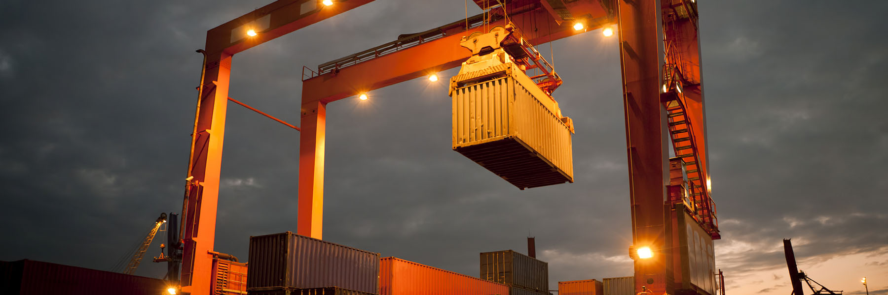

Quan điểm của nhà nhập khẩu
Mối quan tâm chính của các nhà nhập khẩu Úc là sự linh hoạt...

Việt Nam và Úc tuy cách xa về địa lý, có nhiều khác biệt về văn hóa và lịch sử nhưng đến với nhau trên nền tảng lợi ích chung và tôn trọng lẫn nhau, cùng phát triển trong hòa bình và thịnh vượng.
Trong hơn 40 năm qua, kể từ khi chính thức thiết lập quan hệ ngoại giao ngày 26-02-1973, trải qua bao thăng trầm của lịch sử, tình hữu nghị giữa nhân dân hai nước đã được khẳng định và ngày càng phát triển.
Mối quan hệ hữu nghị, hợp tác giữa hai nước, nhất là kể từ khi thiết lập quan hệ Đối tác Toàn diện tháng 9-2009, ngày càng được củng cố vững chắc, phát triển sâu rộng trên tất cả các lĩnh vực như chính trị, kinh tế, thương mại, đầu tư, an ninh−quốc phòng, văn hoá, giáo dục, du lịch. Chúng ta đã gặt hái nhiều thành tựu trong 40 năm qua nhưng còn có thể đạt được nhiều hơn nữa trong những thập kỷ tới.
Nhằm giúp các doanh nghiệp Việt Nam nắm bắt cơ hội, khai thác tối đa tiềm năng của quan hệ hai nước, Đại sứ quán Việt Nam và cơ quan Thương vụ tại Úc phối hợp biên soạn “Hướng dẫn xuất khẩu vào thị trường Úc” với hy vọng tài liệu tham khảo này thực sự hữu ích.
Lương Thanh Nghị
Đại sứ Đặc mệnh Toàn quyền Việt Nam tại Úc
Thị trường Úc là một thị trường nhập khẩu đầy tiềm năng, mang đến cả cơ hội và thách thức cho các nhà cung cấp thương mại và dịch vụ nước ngoài. Úc là một đất nước vô cùng rộng lớn với diện tích trên 7,6 triệu km2 đứng thứ 6 trên thế giới, xấp xỉ diện tích nước Mỹ nhưng dân số thì ít ỏi chỉ có 23 triệu dân, bằng ½ dân số của Bang California của Mỹ. Tuy dân số nhỏ như vậy nhưng Úc lại là một thị trường có kim ngạch nhập khẩu hàng hoá hơn 241 tỷ đô la Mỹ, và kim ngạch nhập khẩu đạt hơn 262 tỷ đô la Mỹ trong năm 2013, một con số rất ấn tượng.
Thị trường Úc mang đến cơ hội cho các nhà cung cấp nước ngoài do phụ thuộc nhiều vào hàng hoá nhập khẩu phục vụ cho sản xuất và tiêu dùng. Thị trường Úc tương đối mở cho các nhà cung cấp nước ngoài, với việc không áp dụng hạn ngạch nhập khẩu và hầu hết thuế nhập khẩu là 5% (mức thuế chung) và 0% cho các nước kém phát triển. Theo Hiệp định Khu vực Thương mại Tự do giữa ASEAN và Úc, New Zealand (AANZFTA) thì khoảng 96% thuế quan của Úc được loại bỏ vào năm 2010, phần còn lại sẽ được thực hiện nốt vào năm 2020 đối với hàng hoá nhập khẩu nhập khẩu từ các nước ASEAN, trong đó có Việt Nam.
Tuy nhiên, thị trường Úc là thị trường nhiều thách thức cho các nhà cung cấp nước ngoài. Hầu hết các nhà nhập khẩu Úc đặt hàng với số lượng nhỏ nhưng trông đợi được chào hàng với giá thấp hơn cả ở Mỹ và hầu hết các nước châu Âu. Ngoài ra, các nhà nhập khẩu Úc yêu cầu thời hạn giao hàng nghiêm ngặt và đưa ra các tiêu chuẩn tương đối cao.
Cuốn sách này sẽ đề cập đến các khía cạnh cơ bản mà các doanh nghiệp cần quan tâm nếu muốn tận dụng các cơ hội tại thị trường rất cạnh tranh này.
Cuốn sách này được viết dựa trên cuốn Australia – A Guide to the Market, tái bản năm 2013 và Thương vụ Việt Nam cập nhật số liệu, thông tin đến hết năm 2013 theo số liệu của Bộ Ngoại giao và Thương mại Úc, tham khảo tài liệu hồ sơ thị trường Úc của Vụ Thị trường Châu Á – Thái Bình Dương và bổ sung thêm quan hệ thương mại giữa Việt Nam và Úc và các thông tin cần thiết khác cho doanh nghiệp.
Hy vọng cuốn sách sẽ là nguồn tài liệu tham khảo có ích đối với các doanh nghiệp đã và đang muốn xuất khẩu vào thị trường Úc.
(Nguồn: Cơ quan Thống kê Úc - Australian Bureau of Statistics)
Phần lớn dân cư Úc sống ở các thành phố và thị trấn dọc bờ biển đất nước. Có hai thành phố chính là Sydney và Melbourne và hầu hết hàng hoá nhập khẩu vào Úc đi qua cảng của hai thành phố này. Một số cảng nhập khẩu hàng hoá quan trọng khác là Brisbane, Fremantle (Perth) và Adelaide.
Hầu hết khách hàng của Úc đều quan tâm đến vấn đề “giá trị tương ứng của đồng tiền” đặc biệt là về chất lượng. Các nhà nhập khẩu Úc mong đợi được chào hàng với giá cả cạnh tranh, số lượng nhỏ, chất lượng ổn định và giao hàng đúng hạn.
Mặc dù đất nước rộng lớn và dân số nhỏ, hầu hết người Úc sống ở các thành phố và thị trấn lớn. Lượng mưa trong lục địa thấp đồng nghĩa với việc dân cư sống tập trung ở dọc bờ biển, đặc biệt ở khu vực đông nam nước Úc. Trên thực tế, gần một nửa dân số Úc sống ở Sydney, Melbourne và các thành phố và thị trấn lân cận.
Các thành phố chính của Úc là:
Với dân số hơn 4,6 triệu người, Sydney là thành phố lớn nhất của Úc và là trung tâm các hoạt động kinh tế trong nhiều lĩnh vực. Do là thủ phủ của bang có dân số lớn nhất nước Úc (bang New South Wales) với dân số hơn 7,4 triệu người nên lượng hàng hoá nhập khẩu qua cảng Sydney rất lớn.
Sydney là thành phố năng động và có nhiều điểm tương đồng về tự nhiên như San Fransisco. Sydney thu hút đông đảo cộng đồng di cư đến từ khu vực châu Á không chỉ do các cơ hội làm ăn kinh doanh mà còn bởi thời tiết thuận lợi, mùa hè ấm áp và mùa đông dễ chịu. Rất nhiều doanh nghiệp nhập khẩu có trụ sở tại Sydney và các nhà cung cấp nước ngoài thường ghé Sydney trong mỗi chuyến đi tới Úc.
Melbourne, thủ phủ của bang Victoria, là thành phố lớn thứ hai ở Úc với dân số khoảng 4,16 triệu người trên tổng số hơn 5,76 triệu người của toàn bang. Melbourne là thành phố sôi động, thành phố của thế giới và đa dạng về chủng tộc nhưng vẫn giữ được sự yên tĩnh và cuộc sống nhẹ nhàng. Melbourne là trung tâm tài chính và ngân hàng với tám trong số 10 công ty lớn nhất của Úc có trụ sở chính tại đây. Cảng Melbourne là cảng hàng hóa chính của Úc và là cảng container lớn nhất khu vực Bán Cầu Nam.
Ở Melbourne có rất nhiều nhà nhập khẩu lớn có các mạng lưới phân phối trên toàn quốc. Các nhà nhập khẩu ở đây cũng có những yêu cầu tương tự như các nhà nhập khẩu tại Sydney nhưng thị trường có chút ít khác biệt. Ví dụ, thị trường hàng dệt len ở Melbourne tốt hơn do ở đây khí hậu mát hơn, trong khi đó thị trường đồ trang trí nội thất có thị hiếu giống của châu Âu nhưng không cùng mức độ được quan tâm như đồ nội thất bình dân ngoài trời.
Brisbane là thủ phủ của bang Queensland nằm ở phía Bắc. Dân số Brisbane khoảng 2,15 triệu người trên 4,67 triệu dân số toàn bang. Brisbane có khí hậu cận nhiệt đới với nhiệt độ từ tháng Mười hai đến tháng Hai tương tự như ở Đông Nam Á. Cuộc sống ở Brisbane khá thoải mái và cách ăn mặc ở đây cũng rất bình dị.
Khi so sánh với Sydney và Melbourne thì ở đây có rất ít các nhà nhập khẩu lớn. Hầu hết hàng hoá bán tại các cửa hàng bán lẻ ở Queensland đều được cung cấp hoặc nhập khẩu trực tiếp hoặc gián tiếp thông qua các nhà nhập khẩu hoặc các nhà bán buôn ở các bang phía Nam. Mặc dù vậy, vẫn có cơ hội cho các nhà cung cấp nước ngoài ở Brisbane, đặc biệt là các sản phẩm cho du lịch (đồ lưu niệm, quà tặng…), các ngành công nghiệp dịch vụ về du lịch (xây dựng, nội thất, vật liệu xây dựng…), ngành khai thác mỏ và nông nghiệp.
Perth là thủ phủ của bang có diện tích lớn nhất nước Úc, bang Tây Úc, cách Sydney 4 tiếng rưỡi bay, được coi thủ phủ biệt lập nhất trên thế giới tính về địa lý. Dân số của thành phố này khoảng 1,83 triệu người, chiếm trên 70% dân số của cả bang Tây Úc (khoảng 2,5 triệu). Perth có khí hậu Địa Trung Hải nóng và khô vào mùa hè, lạnh và ẩm ướt vào mùa đông. Lối sống ở đây nói chung là đơn giản và thoải mái.
Do nằm biệt lập với các thành phố khác, ngày càng có nhiều công ty tại địa phương nhập khẩu trực tiếp hàng hoá và phân phối trên toàn quốc. Tuy Perth được coi là một thị trường độc lập cho một số sản phẩm nhập khẩu, nhưng khó khăn lớn nhất đối với người cung cấp nước ngoài là số lượng sản phẩm tiêu dùng nhỏ, chỉ để phục vụ cho một bang với tổng số dân khoảng 2,3 triệu người.
Do đứng đầu nước Úc về sản xuất khoáng sản, dầu mỏ và khí đốt cũng như các sản phẩm nông nghiệp như lúa mì và len, thị trường Tây Úc mang đến nhiều cơ hội đặc biệt trong các lĩnh vực khoảng sản, năng lượng (cả trên bờ và xa bờ) và nông nghiệp. Trong ngành chế tạo, đóng tàu, đặc biệt là tàu thuyền chở khách bằng vật liệu nhôm là ngành quan trọng của bang.
Adelaide là thủ phủ của bang Nam Úc có dân số khoảng 1,23 triệu người trên tổng số 1,67 triệu người của cả bang với ngành sản xuất chế tạo có qui mô hạn chế và chỉ có một số ít nhà nhập khẩu lớn. Tuy nhiên, Adelaide lại là một trong những trung tâm sản xuất ô tô chính của Úc.
Hầu hết các nhà cung cấp nước ngoài không coi Adelaide là thị trường quan trọng. Các nhà nhập khẩu ở thành phố này chủ yếu cung cấp hàng hoá cho các cửa hàng bán lẻ với khối lượng tương đối nhỏ. Hầu hết hàng hoá nhập khẩu ở thành phố này đều thông qua các nhà nhập khẩu tại Melbourne.
Canberra là thủ đô của Úc, với dân số chỉ khoảng 383.000 người. Thành phố được qui hoạch đồng bộ, các hoạt động tập trung chủ yếu vào Chính phủ và bộ máy hành chính.
Đối với các nhà cung cấp nước ngoài, Canberra không được coi là một thị trường quan trọng. Ở đây có rất ít các ngành công nghiệp sản xuất chế tạo, dân số không nhiều và hầu hết các nhu cầu cần thiết cho thành phố được cung cấp bởi các nhà sản xuất và nhập khẩu tại Sydney hoặc Melboume.
Hobart là thủ phủ của bang đảo Tasmania với dân số khoảng 217.000 người và dân số toàn bang chỉ có 513.000. Các nhà nhập khẩu ở Melbourne cung cấp hầu hết nhu cầu hàng hoá của Hobart, chỉ có một số ít nhà nhập khẩu ở Tasmania với qui mô nhỏ.
Darwin nằm ở phía Bắc nước Úc, là thủ phủ của vùng lãnh thổ Bắc Úc. Ở đây khí hậu nhiệt đới và có lối sống thoải mái và bình dân. Với dân số chỉ khoảng 129.000 người ở khu trung tâm Darwin trên tổng số 241.800 người của toàn vùng lãnh thổ, chỉ có một số ít các nhà nhập khẩu với số lượng hàng hoá hạn chế. Tuy nhiên, Darwin cung cấp hàng hóa cho các căn cứ quân sự trọng yếu và Darwin có bước tiến triển nhanh trong lĩnh vực khai thác dầu khí ngoài khơi tại biển Timor. Vùng lãnh thổ Bắc Úc còn có các ngành công nghiệp khai mỏ và chăn nuôi gia súc khá phát triển.
Tuyến đường sắt chạy từ Darwin qua Alice Springs nối với tất cả các thủ phủ ở phía Nam đã làm tăng thêm tiềm năng của Darwin như một cảng trung chuyển xuất nhập khẩu giữa Darwin và các cảng ở châu Á.
Như vậy, có thể nói, hai thành phố quan trọng nhất đối với các nhà cung cấp nước ngoài là Sydney và Melbourne. Mặc dù Úc có diện tích rộng như nước Mỹ nhưng Úc không có những phân đoạn thị trường riêng rẽ theo địa lý phong phú như Mỹ và hầu hết các nhà cung cấp nước ngoài sẽ thấy rằng chỉ một chuyến thăm Sydney và Melbourne là có thể biết được các đặc điểm chính của thị trường, đặc biệt là các sản phẩm tiêu dùng.
Nhìn chung, người tiêu dùng Úc được miêu tả là khá bảo thủ và rất hiểu về vấn đề "giá trị tương xứng của đồng tiền". Trong những năm qua, có một xu hướng đáng chú ý là sản phẩm tiêu dùng được đánh giá dựa trên tiêu chí “giá trị của đồng tiền” hơn là tiêu chí về giá. Ở một số phân đoạn thị trường, thị trường hàng giá rẻ đã suy giảm do người tiêu dùng sẵn sàng trả giá cao cho các sản phẩm có chất lượng. Điều này không có nghĩa là người tiêu dùng Úc sẵn sàng trả giá cao. Trên thực tế, hầu hết người tiêu dùng sẽ so sánh giá của nhiều người bán lẻ khác nhau trước khi quyết định mua hàng hoá quan trọng.
Hầu hết người tiêu dùng Úc có thái độ khá cởi mở đối với hàng hóa nhập khẩu. Tuy nhiên, khi hàng nội địa được đánh giá là có giá trị tương xứng thì người tiêu dùng thường mua hàng hoá sản xuất trong nước. Mặc dù vậy, người tiêu dùng cũng đã quen với các chủng loại hàng hóa nhập khẩu và thường sẽ đưa ra quyết định cuối cùng dựa trên các yếu tố như chất lượng, kiểu dáng và giá cả hơn là nguồn gốc xuất xứ.
Bên cạnh đó, vẫn luôn tồn tại phân khúc thị trường một số mặt hàng nhập khẩu giá cao và thời trang. Ví dụ, quần áo và giày dép thời trang của phụ nữ từ Ý và Pháp có giá bán lẻ tương đối cao hay xe ô tô từ châu Âu cũng được bán với giá rất cao. Một điểm nữa cần lưu ý là người tiêu dùng Úc rất quan tâm đến vấn đề chất lượng. Nhiều nhà bán lẻ ở Úc áp dụng chính sách hoàn trả lại tiền hoặc đổi hàng, dù chỉ đơn giản là do người mua thay đổi ý định mua hàng.
Người tiêu dùng Úc đặt ra tiêu chuẩn chất lượng rất cao và các tiêu chuẩn này được hỗ trợ bởi một loạt các qui định bảo vệ người tiêu dùng ở tất cả các bang. Nhà nhập khẩu và các nhà bán lẻ tuân thủ các qui định này và sẽ không chấp nhận các sản phẩm không đáp ứng tiêu chuẩn kiểm tra chất lượng.
Nhà cung cấp nước ngoài sẽ thấy rằng mối quan tâm chính của các nhà nhập khẩu Úc là giá cả, chất lượng, độ tin cậy, thời hạn giao hàng và số lượng tối thiểu. Tuy nhiên, một số nhà cung cấp nước ngoài có kinh nghiệm tại thị trường này cho rằng có ba tiêu chuẩn vàng khi bán hàng vào thị trường Úc là "giá, giá và giá".
Điều này không hoàn toàn chính xác, sự thật là các nhà nhập khẩu nói chung thường nêu câu hỏi đầu tiên với nhà cung cấp mới thường liên quan tới giá FOB/FCA của sản phẩm. Nhà nhập khẩu Úc thường mong muốn trả giá thấp hơn so với các nhà nhập khẩu tại Mỹ và châu Âu nhưng đòi hỏi hàng hóa phải có chất lượng ổn định và giao hàng đúng hạn. Họ cũng thường đặt hàng với số lượng ít hơn các nhà nhập khẩu ở rất nhiều thị trường khác. Lý do mà người tiêu dùng Úc có quan điểm khắt khe là:
Hầu hết các nhà nhập khẩu Úc thường ít thay đổi nhà cung cấp nước ngoài mới. Mặt khác, họ thường tạo mối quan hệ gần gũi với những nhà cung cấp quen thuộc để đảm bảo việc kinh doanh được liên tục và họ không thích thay đổi nhà cung cấp thường xuyên một cách đột ngột.
Khi lần đầu giao dịch với khách hàng mới, nhà nhập khẩu Úc thường sẽ đặt hai hoặc ba đơn hàng thử nghiệm để đảm bảo nhà cung cấp đáp ứng được các tiêu chuẩn chất lượng. Khi đạt yêu cầu, những đơn hàng sau sẽ được đặt thông qua email hoặc fax và số lượng đặt hàng có thể tăng lên.
Tuy nhiên, nhà nhập khẩu Úc sẽ không chấp nhận việc nhà cung cấp của họ phá vỡ thoả thuận không bán hàng cho các nhà nhập khẩu khác. Việc qua mặt các nhà nhập khẩu Úc sẽ là một sai lầm nghiêm trọng trong thị trương nhỏ bé này vì nhà nhập khẩu sẽ sớm phát hiện được điều gì đang xảy ra.
Một điểm quan trọng khác là nhà nhập khẩu Úc không thích mặc cả. Họ sẵn sàng đàm phán một mức giá hợp lý nhưng không mặc cả để giá giảm 20% hoặc hơn. Nếu nhà cung cấp nước ngoài đưa ra mức giá không thực tế, nhà nhập khẩu Úc thường sẽ không cân nhắc bản chào hàng. Do vậy, khi báo giá cho nhà nhập khẩu Úc, điều quan trọng nhất là đưa ra mức giá “hợp lý nhất”. Mức giá này thường phải thấp hơn mức giá chào cho người mua tại Mỹ và châu Âu với tỷ lệ mặc cả không quá 3% đến 5%.
Điểm cuối cùng về nhà nhập khẩu Úc là quan điểm của họ đối với nhà cung cấp mới. Như đã đề cập ở trên, hầu hết các nhà nhập khẩu không muốn thay đổi nhà cung cấp hiện tại vì lo ngại những khó khăn họ sẽ phải đối mặt khi tìm cách xây dựng mối quan hệ làm ăn với nhà cung cấp mới. Trong khi, điều đầu tiên hấp dẫn các nhà nhập khẩu Úc là mức giá cạnh tranh, họ vẫn sẽ do dự khi làm ăn với nhà cung cấp không chứng tỏ được sự tự tin trong việc cung cấp hàng có chất lượng ổn định, giao hàng đúng hạn và giữ liên hệ thường xuyên.
Trong những năm gần đây, nền kinh tế Úc đang tiếp tục phục hồi từ cuộc khủng hoảng kinh tế toàn cầu năm 2008 và tiếp tục đà tăng trưởng.
Năm tài chính 2011-2012, nền kinh tế Úc tăng trưởng 3,4%, so với 2,4% trong năm trước đó.
Năm 2012-2013, tăng trưởng kinh tế Úc giảm so với 2011-2012 do tác động bất lợi của tình hình kinh tế thế giới và đầu tư vào ngành khai khoáng giảm. Tuy nhiên, tăng trưởng kinh tế Úc vẫn duy trì ở mức ổn định trong khối OECD. Trong năm tài chính 2012-13, GDP tăng 2,6%, tỷ lệ thất nghiệp 5,8%, lạm phát 2,2%.
Kinh tế Úc là nền kinh tế phụ thuộc nhiều vào khai thác các nguồn tài nguyên, khoáng sản. Trong năm vừa qua, đầu tư trong lĩnh vực khai khoáng giảm mạnh, ảnh hưởng không nhỏ đến cả nền kinh tế. Đầu tư giảm khiến cho thất nghiệp tăng. Nguyên nhân của việc này được cho là do năm vừa qua có sự thay đổi của Chính phủ Úc khiến các nhà đầu tư mới lo ngại khi đầu tư vào đất nước này.
Do ảnh hưởng của chiến dịch tranh cử kéo dài và thay đổi chính quyền, một số chính sách kinh tế lớn dưới chính quyền Công đảng bị gián đoạn như: cải cách thuế carbon và thuế cho thuê tài nguyên, triển khai Dự án Băng thông rộng trị giá hơn 30 tỷ đô la Úc. Úc đang đối mặt với những khó khăn ảnh hưởng đến tính bền vững và ổn định của nền kinh tế như (i) mức độ phụ thuộc cao vào xuất khẩu khoáng sản, dẫn đến nguy cơ giảm tăng trưởng do giá nguyên liệu xuất khẩu giảm; (ii) đồng đô la Úc ở mức cao. Để nâng cao năng lực nền kinh tế, Chính quyền Liên đảng chủ trương các định hướng lớn: (i) cải cách môi trường kinh doanh thông qua đơn giản hóa các thủ tục và nới lỏng quy định đối với doanh nghiệp; (ii) khôi phục công nghiệp chế tạo (iii) đẩy mạnh thương mại.
| Chỉ số | Đơn vị | 2008 | 2009 | 2010 | 2011 | 2012 | 2013 |
|---|---|---|---|---|---|---|---|
| GDP | Tỷ USD | 1,034.2 | 976.4 | 1,244.8 | 1,491.0 | 1,541.4 | 1,488.0 |
| GDP (PPP) | Tỷ USD | 821.9 | 840.0 | 872.4 | 911.1 | 961.0 | 998.3 |
| GDP đầu người | USD | 48,158 | 44,653 | 56,140 | 66,209 | 67,256 | 64,157 |
| Tăng trưởng GDP | % | 2,4 | 1,5 | 2,6 | 2,4 | 3,7 | 2,5 |
| Xuất khẩu | Triệu USD | 276,664 | 248,878 | 283,481 | 313,232 | 300,054 | 262,309 |
| Tăng trưởng XK | % | 26,47 | -10,04 | 13,90 | 10,49 | -4,2 | -12,58 |
| Nhập khẩu | Triệu USD | 286,159 | 254,260 | 269,155 | 294,436 | 316,325 | 241,151 |
| Tăng trưởng NK | % | 19,53 | -11,15 | 5,86 | 9,39 | 7,43 | -23,76 |
| Nhập siêu/Xuất siêu | Triệu USD | -9,495 | -5,382 | 14,326 | 18,796 | -16,271 | 21,158 |
| Lạm phát | % | 3,7 | 2,1 | 2,8 | 3,0 | 2,2 | 2,2 |
| FDI | Tỷ USD | 55,727 | 39,973 | 40,444 | 58,011 | 55,972 |
Úc là một nền kinh tế mở, năng động và hội nhập hoàn toàn vào thương mại toàn cầu và thương mại khu vực châu Á – Thái Bình Dương. Hơn 20 năm qua, thương mại hàng hoá và dịch vụ của Úc (xuất khẩu và nhập khẩu) đã tăng trưởng trung bình 8,3%/năm (tính theo giá trị thực tế).
Có được lợi thế cạnh tranh đặc biệt trong ngành khai mỏ và nông nghiệp trong hơn một thế kỷ, Úc đang phát triển những thế mạnh cạnh tranh mới như là một nhà cung cấp quốc tế về thương mại và dịch vụ tiên tiến.
Trong năm 2012-2013, tổng giá trị thương mại hàng hoá của Úc đạt mức 483,91 tỷ đô la Úc, trong đó nhập khẩu đạt 236,68 tỷ đô la Úc và xuất khẩu đạt 247,23 tỷ đô la Úc.
Về đối tác thương mại, châu Á là thị trường quan trọng nhất của Úc.
Trong năm 2012-2013, Trung Quốc vẫn là đối tác thương mại lớn nhất của Úc, sau khi chiếm ngôi của Nhật Bản trong những năm gần đây. Trong năm 2012-2013, thương mại hai chiều giữa Úc và Trung Quốc đạt 122,45 tỷ đô la Úc, trong đó Úc xuất khẩu sang Trung Quốc 77,97 tỷ đô la Úc và nhập khẩu từ Trung Quốc 44,48 tỷ đô la Úc.
Thương mại hàng hoá giữa Trung Quốc và Úc đã tăng trung bình 20,4%/năm trong thập kỷ vừa qua, trở thành đối tác thương mại tăng trưởng nhanh nhất của Úc. Kim ngạch thương mại của Úc với Trung Quốc chỉ chiếm 2,5% trong tổng kim ngạch xuất khẩu của Úc trong những năm cuối của thập kỷ 80.
Trong những năm cuối thập kỷ 80, kim ngạch thương mại với Nhật Bản chiếm phần lớn trong tổng kim ngạch thương mại của Úc, đạt khoảng 22%. Tuy nhiên, trong những năm gần đây, tỷ lệ này đã giảm xuống do các nền kinh tế châu Á khác phát triển mạnh mẽ hơn. Trong năm 2012-2013, xuất khẩu hàng hoá của Úc sang Nhật Bản đạt 46,48 tỷ đô la, trong khi đó nhập khẩu đạt 18,35 tỷ đô la.
Ấn Độ đã trở thành đối tác thương mại quan trọng của Úc, đặc biệt trong việc xuất khẩu hàng hoá. Trong vòng hơn 10 năm qua, xuất khẩu hàng hoá của Úc sang Ấn Độ đã tăng trung bình 21,8%/năm, đứng thứ năm trong các thị trường xuất khẩu của Úc. Trong năm 1988-1989, xuất khẩu của Úc sang Ấn Độ chỉ đạt 549 triệu đô la, chiếm khoảng 1,3% tổng xuất khẩu hàng hoá của Úc, trong khi đó năm 2012-2013 con số này đã lên đến 11,41 tỷ đô la. Mặc dù vậy, hàng hoá nhập khẩu từ Ấn Độ chỉ đạt khoảng 3,39 tỷ đô la trong năm 2012-2013.
Một xu hướng khá rõ là trong vòng 20 năm qua, các nhà xuất khẩu của Úc đã chuyển từ các nước phát triển sang các nước đang phát triển. Trong những năm 1989-1990, các nước OECD (Mỹ, hầu hết các nước châu Âu, Nhật Bản và các nước khác) chiếm trên 73% tổng xuất khẩu của Úc, trong khi các nước đang phát triển chỉ chiếm dưới 27%. Trong năm 2012-2013, các nước OECD chiếm khoảng 40,6% trong khi các nước đang phát triển (dẫn đầu là Trung Quốc và Ấn Độ) chiếm tới 59,4% tổng xuất khẩu của Úc.
Nằm ngoài xu thế thay đổi trên, Liên minh châu Âu vẫn là đối tác thương mại quan trọng của Úc chiếm 11,25% tổng kim ngạch thương mại hàng hoá của Úc trong năm 2012-2013, đứng thứ ba sau Trung Quốc và Nhật Bản. EU là đối tác nhập khẩu quan trọng của Úc do Úc nhập từ châu Âu các thiết bị quan trọng (máy tính, máy móc, xe tải và máy bay) và các hàng hoá tiêu dùng (TV, xe cộ và các thiết bị điện tử khác).
Giống như hầu hết các nền kinh tế phát triển khác, lĩnh vực dịch vụ chiếm một vị trí quan trọng trong nền kinh tế Úc. Trong vòng 10 năm qua, thu nhập từ lĩnh vực dịch vụ chiếm khoảng 70% GDP và thu hút khoảng gần 80% lực lượng lao động.
Việc tăng trưởng các ngành dịch vụ là do tăng các dịch vụ phức tạp như việc áp dụng các công nghệ mới để đáp ứng nhu cầu, đặc biệt trong lĩnh vực dịch vụ tài chính và kinh doanh, vận tải, truyền thông, vui chơi giải trí. Xuất khẩu dịch vụ của Úc tăng trưởng trung bình khoảng 4%/năm trong thập kỷ vừa qua. Xuất khẩu dịch vụ trong năm tài chính 2012-2013 của Úc đạt 52,41 tỷ đô la Úc, tăng 3,7% so với năm 2010-2011 và chiếm 17,4% tổng xuất khẩu của Úc, trong khi nhập khẩu dịch vụ đạt 63,96 tỷ đô la Úc, tăng 4,5% so với năm 2010-2011.
Du lịch là ngành xuất khẩu mũi nhọn của Úc, với trị giá xuất khẩu liên quan đến du lịch đạt 31,2 tỷ đô la trong năm 2012-2013, tăng 2,6% so với năm 2010-2011, và có mức tăng trưởng trung bình là 2,1% kể từ năm 2007-2008 đến nay. Mặc dù vậy lợi nhuận đã giảm dần trong hai năm qua do đồng đô la Úc quá mạnh. Du lịch còn đóng góp quan trọng trong việc tạo công ăn việc làm và phát triển vùng miền trong nước Úc.
Xuất khẩu dịch vụ giáo dục đóng góp một phần quan trọng khác trong tăng trưởng xuất khẩu dịch vụ. Tăng trưởng trung bình kể từ năm 2006-2007 là 1,6%/năm. Úc không chỉ thành công tại các thị trường châu Á truyền thống mà còn thành công trong việc mở rộng sang nhiều thị trường chuyển đổi, bao gồm Bắc Mỹ, Nam Mỹ, châu Phi, châu Âu, Bangladesh và Philippines. Chất lượng và giá trị bằng cấp của Úc được công nhận toàn cầu đã đóng góp vào sự tăng trưởng của ngành này. Năm 2012-2013, xuất khẩu dịch của Úc đạt 14,5 tỷ đô la Úc, giảm 1,7% so với năm 2010-2011.
Các ngành dịch vụ khoa học, kỹ thuật và dạy nghề cũng đang đạt mức tăng trưởng quan trọng cho Úc. Các ngành dịch vụ này rất đa dạng từ kế toán truyền thống, sở hữu, luật, kiến trúc sư đến nghiên cứu thị trường, quản trị kinh doanh, dịch vụ IT… Năm 2012-2013 xuất khẩu các dịch vụ này của Úc tăng 10,2% so với năm trước đó và đạt mức 15,1 tỷ đô la Úc.
Ngành tài chính của Úc cũng đang từng bước tăng trưởng vững chắc và ổn định và chiếm lợi thế trong tăng trưởng toàn cầu đối với lĩnh vực tài chính thông qua các thị trường tài chính mở và giảm thiểu các qui định.
Việc giảm bớt các qui định của ngành tài chính Úc trong những năm giữa thập kỷ 90 đã tạo điều kiện cho lĩnh vực này tham gia vào thị trường toàn cầu. Một số ngân hàng nước ngoài đã gia tăng khả năng cạnh tranh về dịch vụ tài chính trên thị trường Úc.
Thị trường tài chính năng động và hiệu quả, giá cạnh tranh, tình hình chính trị và kinh tế ổn định và những cải cách đã giúp Úc giữ vững vị trí trung tâm tài chính quan trọng trong khu vực châu Á – Thái Bình Dương.
5 ngành dịch vụ xuất khẩu lớn nhất của Úc trong năm 2012-2013 bao gồm:
Úc rất giàu tài nguyên khoáng sản và đây là mặt hàng xuất khẩu chính của Úc. Hơn 192,5 tỷ đô la khoáng sản được xuất khẩu ra khỏi nước Úc trong năm tài chính 2011-2012 và 176,5 tỷ đô la Úc trong năm tài chính 2012-2013. Mặc dù vậy con số này vẫn giảm so với mức tăng gần 32% của năm trước đó do giá cả hàng hoá giảm cũng như nhu cầu nhập khẩu khoáng sản của một số đối tác quan trọng giảm do kinh tế toàn cầu bất ổn.
Các mặt hàng khoáng sản chính của Úc bao gồm than đá, dầu mỏ, vàng, quặng sắt, ôxit nhôm, nhôm, khí đốt tự nhiên và đồng. Gần đây, xuất khẩu sa khoáng nặng cũng đang có sự tăng trưởng quan trọng do được sử dụng rộng rãi trong công nghiệp.
Ngành công nghiệp khai mỏ của Úc phát triển mạnh mẽ và được đánh giá là một trong những nước có tiềm năng nhất trên thế giới trong ngành này.
Mặt hàng nông nghiệp xuất khẩu chính của Úc bao gồm lúa mì, lúa mạch, thịt bò và thịt bê, rượu vang, đường và len. Kim ngạch xuất khẩu các sản phẩm nông nghiêp đạt 39,8 tỷ đô la trong năm 2011-2012 và khoảng 40,3 tỷ trong năm 2012-2013.
Phần lớn các mặt hàng nông nghiệp của Úc được xuất khẩu sang thị trường Nhật Bản, Trung Quốc, Hàn Quốc và Mỹ. Những năm gần đây, ở Úc đã xuất hiện xu hướng đa dạng các sản phẩm nông nghiệp và hiện nay Úc sản xuất và xuất khẩu đa dạng các mặt hàng từ gạo cho đến cam quýt.
Ngành thuỷ sản cũng phát triển mạnh mẽ. Mặt hàng cá ngừ, tôm, tôm hùm, bào ngư, ngọc trai của Úc được xuất khẩu ra thị trường thế giới. Năm 2010-2011, xuất khẩu thuỷ sản Úc đạt khoảng 503 triệu đô la, giảm 26,6% so với năm trước đó.
Hầu hết các ngành sản xuất chế tạo của Úc được hỗ trợ bởi các mức thuế suất bảo hộ trong nửa đầu thế kỷ trước và trong những năm đầu sau chiến tranh. Tuy nhiên, rất nhiều ngành do được hình thành nhờ các rào cản thuế quan bảo hộ nên có rất ít động lực để nâng cao hiệu quả hoặc vươn ra ngoài thị trường nội địa.
Trong thập kỷ trước, sức cạnh tranh của rất nhiều ngành sản xuất chế tạo đã được nâng cao thông qua chương trình cải cách kinh tế vi mô của Chính phủ như hạ giá đồng tiền, kiềm chế tiền lương và điều tiết lợi nhuận. Sự hỗ trợ kịp thời của Chính phủ đã tạo nên cú hích cho rất nhiều ngành tìm cách nâng cao khả năng cạnh tranh, đặc biệt là sản xuất hướng vào xuất khẩu.
Ngành sản xuất chế tạo của Úc đã đạt được những thành quả quan trọng trong những năm gần đây nhờ những cải cách mạnh mẽ trong ngành công nghiệp như giảm thuế suất và ứng dụng công nghệ tiên tiến. Với khả năng cạnh tranh toàn cầu và hướng vào xuất khẩu, ngành này đang trở thành động lực mạnh mẽ thúc đẩy tăng trưởng xuất khẩu trong đó trọng tâm là những hàng hoá có mức độ tinh xảo cao.
Trong năm 2012-2013, ngành sản xuất chế tạo của Úc đã xuất khẩu 39,5 tỷ đô la, giảm 5,2% so với năm trước đó.
Úc là một nước nhập khẩu vốn truyền thống và vì vậy thường bị thâm hụt tài khoản vãng lai. Năm 2012-2013, tổng mức thâm hụt tài khoản vãng lai của Úc lên tới 50,34 tỷ đô la, nhưng đã giảm 11,5% so với năm 2011-2012.
Việc thâm hụt tài khoản vãng lai của Úc tăng mạnh những năm gần đây phản ánh cán cân thương mại của Úc. Cán cân thương mại và dịch vụ đạt thặng dư 10,4 tỷ đô la trong năm 2012-2013, so với 21,1 tỷ năm 2011-2012 và 31,6 tỷ đô la thặng dư trong năm 2010-2011.
Mức thâm hụt này phản ánh sự phụ thuộc quá nhiều của kinh tế nước Úc vào vốn nước ngoài.
Quỹ Tiền tệ Thế giới (IMF) dự báo tăng trưởng kinh tế của Úc trong hai năm tới sẽ tiếp tục chậm lại trong khi kinh tế thế giới đang cố gắng để đạt được sự phục hồi bền vững. IMF đã hạ dự báo tăng trưởng của Úc trong năm tới từ 3% xuống còn 2,7% và cũng hạ mức tăng trưởng của năm nay từ 2,8% xuống còn 2,6%. Dự báo trên phản ánh tình trạng giảm sút đầu tư trong lĩnh vực khai khoáng và thể hiện sự bi quan về triển vọng của các nền kinh tế mới nổi. Nó cũng làm nản lòng những người đang hy vọng rằng ngân sách được thông qua vào tháng tới sẽ thể hiện sự thay đổi nhanh chóng của nền kinh tế Úc. IMF dự báo tăng trưởng kinh tế của Úc sẽ được cải thiện chút ít trước năm 2016 và trong hai năm tới tỉ lệ thất nghiệp sẽ tăng từ 6 lên 6,2%. Trong một báo cáo về kinh tế thế giới trước được đưa ra trước cuộc gặp cấp Bộ trưởng của IMF tại Washington, IMF cho biết kể từ khi Bộ Ngân khố Úc đưa ra những đánh giá bi quan về ngân sách từ cuối tháng 12 năm 2013 đến nay, kinh tế Úc đã không được cải thiện. Ngân hàng dự trữ liên bang Úc (RBA) dự báo tăng trưởng kinh tế năm 2015 sẽ từ 2,5 đến 3,5% với hy vọng rằng các khu vực kinh tế không liên quan đến khai khoáng sẽ phục hồi sớm hơn dự đoán của Bộ Ngân khố và IMF.
Bộ Ngân khố Úc dự báo mức tăng GDP sẽ là 2,5% trong 2013-14 và 3% trong 2014-15. Ngân sách 2013-14 dự kiến thu 387,7 tỷ đô la, chi 405,7 tỷ đô la, thâm hụt 18 tỷ đô la, giảm dần trong các năm kế tiếp và đạt thặng dư từ 2015-16. Tổng tiết kiệm toàn khóa là 43 tỷ đô la. Xuất khẩu dự kiến tăng 6,5% và nhập khẩu tăng 6% trong năm 2013-14. Chỉ giá tiêu dùng năm 2013-2014 giữ ở mức 2,5%
Triển vọng về đầu tư vẫn duy trì ở mức chắc chắn trong toàn nước Úc. Đầu tư kinh doanh trông đợi sẽ đạt mức tăng trưởng 5,3% trong năm 2013-2014.
Thuế nhập khẩu ở Úc được tính trên cơ sở giá FOB có nghĩa là giá của hàng hoá đã được đóng vào container và được chuyển lên sàn tàu tại cảng xuất hàng (là cảng biển hoặc cảng hàng không). Cước vận tải và phí bảo hiểm nội địa cho tới địa điểm cuối cùng tại cảng xuất khẩu được bao gồm trong tổng giá tính thuế. Để xác định giá trị lô hàng nhập khẩu ghi bằng đồng ngoại tệ sang đồng đô la Úc, hải quan Úc sử dụng tỷ giá hối đoái tương ứng vào thời điểm xuất hàng.
Úc sử dụng Biểu thuế chung đối với các mặt hàng nhập khẩu từ các nước phát triển hơn (Nhật, Anh…). Bên cạnh biểu thuế này, Úc cũng dành một số ưu đãi cho nhiều nhóm nước (ví dụ như đối với các nước đang phát triển có đủ điều kiện được hưởng ưu đãi và các nước thành viên Diễn đàn Khu vực đảo Thái Bình Dương (PIF)), các nước đã ký hiệp định thương mại song phương như Papua New Guinea, Canada, New Zealand, Singapore, Mỹ, Thái Lan, Chi Lê, Malaysia, và các nước ASEAN. Thành viên của ASEAN là Brunei, Campuchia, Indonesia, Lào, Malaysia, Myanmar, Philippines, Singapore, Thái Lan và Việt Nam.
Papua New Guinea, New Zealand, Singapore, Mỹ, Thái Lan, Chi Lê, Malaysia, ASEAN và các nước thành viên PIF được miễn thuế khi xuất khẩu vào Úc đối với hầu hết các mặt hàng với điều kiện hàng hoá phải đáp ứng được các quy tắc xuất xứ liên quan. Ngoài ra, tất cả hàng hoá xuất xứ từ các nước kém phát triển (LCDs) và Đông Timor cũng được miễn thuế khi xuất khẩu vào thị trường Úc.
Từ năm 1980, chính phủ Úc đã thực hiện một chương trình cải cách thuế trên diện rộng, dẫn tới việc cắt giảm đáng kể việc bảo hộ công nghiệp của Úc.
Từ ngày 1/7/1996, biểu thuế nhập khẩu chung đã ở mức 5% giá trị FOB. Danh mục những sản phẩm thuộc diện chịu mức thuế suất cao hơn bao gồm hàng dệt may, quần áo, giày dép và ô tô, nhưng mức thuế của các sản phẩm này cũng đã được cắt giảm theo lộ trình.
| Châu Á | Cape Verde | Madagascar | Uganda |
|---|---|---|---|
| Afghanistan | Chad | Malawi | Zambia |
| Bangladesh | Trung Phi | Mali | Các nước PIF |
| Bhutan | Comoros | Mauritania | Kiribati |
| Burmar (Myanmar) | Congo | Mozambique | Quốc đảo Solomon |
| Campuchia | Djibouti | Niger | Tuvalu |
| Lào | Equatorial Guinea | Rwanda | Vanuatu |
| Maldives | Ethiopia | Sao Tome & Principe | Samoa |
| Nepal | Eritrea | Senegal | Các nước khác |
| Châu Phi | Gambia | Sierra Leone | Haiti |
| Angola | Guinea | Somalia | Yemen |
| Benin | Guinea Bisseau | Sudan | Đông Timo |
| Burkina Faso | Lesotho | Tanzania | |
| Burundi | Liberia | Togo |
Hạn ngạch nhập khẩu đối với một số mặt hàng dệt may, quần áo và giày dép được bãi bỏ vào năm 1993. Kể từ đó, các biện pháp kiểm soát nhập khẩu duy nhất đối với những mặt hàng này là thuế nhập khẩu, và Chính phủ đã cắt giảm thuế các mặt hàng này theo từng giai đoạn trong vòng hơn 20 năm qua. Cắt giảm các mặt hàng này được áp dụng từ ngày 01/1/2005. Chính phủ Úc cam kết giữ tất cả các dòng thuế mặt hàng dệt may, quần áo, giày dép ở mức năm 2010 đến tận năm 2015 và sau đó giảm thuế hầu hết các mặt hàng này xuống 5%.
| Hàng hóa | 2010 | 2015 |
|---|---|---|
| Quần áo và một số mặt hàng dệt may thành phẩm | 10 | 5 |
| Tấm trải bông và vải dệt | 5 | 5 |
| Các loại vải khác và thảm | 5 | 5 |
| Giày dép | 5 | 5 |
| Túi ngủ, khăn trải bàn | 5 | 5 |
Bên cạnh đó, Úc dành những ưu đãi đặc biệt đối với các mặt hàng may mặc và giày dép sản xuất thủ công và cho phép miễn thuế nhập khẩu những mặt hàng này. Tiêu chí đối với những ưu đãi này rất khắt khe, đòi hỏi các sản phẩm phải được làm bằng phương pháp thủ công, không sử dụng công cụ cầm tay có dùng điện và trong trường hợp là hàng may mặc, 90% nguyên liệu phải là vải sợi tự nhiên.
Theo chương trình gia công ở nước ngoài (OAP), nếu các công ty sản xuất hàng may mặc của Úc chuyển nguyên liệu sản xuất ở Úc ra nước ngoài để gia công thì sẽ chỉ phải trả thuế nhập khẩu đối với những chi phí thuê may và trang trí hoàn thiện ở nước ngoài.
Bên cạnh những ưu đãi đặc biệt đối với hàng dệt may, quần áo và giày dép được sản xuất thủ công, Úc cho phép miễn thuế nhập khẩu các sản phẩm khác đáp ứng các tiêu chuẩn ưu đãi chung đối với hàng thủ công.
Những sản phẩm thỏa mãn các tiêu chuẩn của Úc phải là sản phẩm được sản xuất bằng phương pháp thủ công theo một hoặc nhiều qui trình như sau:
Là một quốc đảo có ngành nông nghiệp đóng vai trò quan trọng, các qui định kiểm dịch của Úc rất chặt chẽ.
Tất cả các loại thực vật nhập khẩu, cho dù tươi hoặc không, hoặc những phần của cây cối như quả, hạt, cành, củ… cũng như gỗ và tất cả những vật phẩm làm từ gỗ, tre… đều phải được kiểm dịch và phải chuyển đến cơ quan kiểm dịch thực vật. Những sản phẩm nhập khẩu bị phát hiện có nhiễm khuẩn sẽ phải được xử lý, tiêu hủy hoặc gửi trả lại bằng chi phí của chủ hàng. Một số loại cây cảnh, hạt, rau quả tươi, phải được cấp phép trước khi nhập khẩu.
Đất bị cấm nhập khẩu vào Úc nên bất kỳ một sản phẩm nào bị phát hiện có đất sẽ bị cách ly kiểm dịch và được trả ra khi cơ quan kiểm dịch xác định rằng các nguy cơ đã được loại bỏ hoàn toàn.
Dưới đây là phần tóm tắt những quy định chính về kiểm dịch. Tuy nhiên các nhà cung cấp nước ngoài nên cập nhật những quy định mới nhất trước khi xuất khẩu hàng hoá sang thị trường Úc. Những thay đổi đối với các quy định kiểm dịch do Bộ Nông nghiệp, Thuỷ sản và Lâm nghiệp (DAFF) của Úc thông báo tại chuyên mục Cảnh báo các điều kiện nhập khẩu liên quan đến an toàn sinh học trên trang web:
ICON Query - Department of Agriculture, Fisheries and Forestry
Hệ thống cảnh báo các điều kiện nhập khẩu đăng tải các thông báo về những vấn đề hiện tại và những thay đổi lớn đối với các quy định về nhập khẩu. Hệ thống này bao gồm các điều kiện nhập khẩu đối với hơn 20.000 thực vật, động vật, vi khuẩn, khoáng sản và các sản phẩm từ con người. Các thông tin này thường xuyên được cập nhật.
Một số mặt hàng (bao gồm những mặt hàng được liệt kê dưới đây) bắt buộc phải được xử lý ngay sau khi nhập khẩu nếu không đưa ra những minh chứng thuyết phục rằng hàng hoá đó đã được xử lý theo quy định trước khi nhập khẩu.
Một số côn trùng có hại nguy cơ cao đe doạ an toàn sinh học của Úc bao gồm một số loài bọ cánh cứng, bướm đêm, mối, ong có tên tiếng Anh chính xác như sau: Asian Longhorn Beetle, Burnt Pine Longicorn Beetle, Japanese Pine Sawyer Beetle, Asian Gypsy Moth, Termites, Auger Beetle, Powder Post Beetle, Wood Wasps.
Rất nhiều côn trùng ngoại lai ở trong gỗ và các sản phẩm từ gỗ dưới dạng trứng hoặc ấu trùng mà chưa thể nhận biết ngay được. Những côn trùng này có thể xuất hiện sau nhiều năm.
Tất cả các nhà nhập khẩu phải lưu ý và tuân thủ các điều kiện nhập khẩu liên quan đến an toàn sinh học. Các điều kiện nhập khẩu được xây dựng dựa trên các bằng chứng khoa học, các phân tích nghiêm ngặt, và việc thu thập tin tức là yếu tố quan trọng để không cho các loại côn trùng xâm nhập và phát tán bệnh tật trong nước Úc.
Có hai bước trong tiến trình an toàn sinh học đối với việc nhập khẩu gỗ và các sản phẩm từ gỗ:
Nguy cơ an toàn sinh học có thể được phát hiện trước hoặc khi đến biên giới thông qua việc sử dụng các biện pháp xử lý được chấp thuận (phụ thuộc vào các yêu cầu nhập khẩu). Những biện pháp xử lý này bao gồm xông khói, chiếu xạ, đốt nóng, đun sôi, hoặc bảo quản tạm thời. Trong một số trường hợp nguy cơ an toàn sinh học có thể được phát hiện bởi sự kiểm tra kỹ lưỡng của nhân viên an toàn sinh học của Bộ Nông nghiệp, Thuỷ sản, và Lâm nghiệp tại biên giới.
Các loại túi được sử dụng làm bao gói cho những lô hàng là các sản phẩm có nguồn gốc thực vật phải là những loại túi mới, sạch và bền, đảm bảo không làm rơi hàng hoá đựng bên trong. Các loại túi được tái sử dụng trong vận chuyển hàng hoá phải được kiểm dịch và xử lý tiêu huỷ hoặc tái xuất. Tất cả các loại gỗ gồm sọt, tấm lót, tấm chặn, tấm kê hàng cũng phải được kiểm tra trừ trường hợp có chứng nhận các loại gỗ này đã được xử lý chống côn trùng lây lan bằng phương pháp thích hợp đã được cơ quan an toàn sinh học của Bộ Nông nghiệp, Thuỷ sản và Lâm nghiệp Úc thông qua.
Vật liệu bao gói có nguồn gốc thực vật bị cấm nhập khẩu trừ các loại sau: sợi gỗ (wood-wool), mùn cưa, giấy vụn, giấy bồi, vỏ gỗ sồi nghiền nhỏ, than bùn. Các loại vật liệu bao gói khác được chấp nhận bao gồm perlite, vermiculite và các loại vật liệu tổng hợp. Tất cả các loại rơm ngũ cốc bị cấm nhập khẩu và không được sử dụng làm vật liệu bao gói.
Hàng hoá đóng trong container nguyên chiếc giao tận nơi nhận không phải kiểm dịch nếu thành phần gỗ sàn và gỗ lót đã được xử lý bằng một phương pháp được chấp nhận. Để tránh việc kiểm tra đóng gói, có thể sử dụng các vật liệu thay thế như bìa các tông, sợi đay mới hoặc kim loại. Khi sử dụng các loại sọt, thùng hoặc tấm kê hàng, cần xử lý những vật dụng này bằng phương pháp thích hợp đã được cơ quan an toàn sinh học của Bộ Nông nghiệp, Thuỷ sản và Lâm nghiệp Úc thông qua.
Một điều quan trọng cần lưu ý container đóng hàng cần phải sạch, không dính đất và không có những chất ô nhiễm từ động thực vật như các hạt ngũ cốc, bột mỳ, thịt, xương, và da. Vật liệu bao gói làm bằng rơm, vỏ trấu và những nguyên liệu tương tự từ thực vật bị cấm nhập khẩu và không được sử dụng để đóng gói.
Cơ quan an toàn sinh học của Bộ Nông nghiệp, Thuỷ sản và Lâm nghiệp Úc đã mở rộng việc thực hiện các biện pháp kiểm dịch động thực vật theo tiêu chuẩn quốc tế (ISPM 15) đối với tất cả các vật liệu bao gói và lót hàng bằng gỗ để hỗ trợ, bảo vệ hoặc vận chuyển hàng hoá bằng đường hàng không khi nhập khẩu vào Úc.
Việc tuân thủ là bắt buộc, hoặc tuân thủ qui định bao gói theo ISPM 15 hoặc đưa ra bằng chứng chứng minh các loại bao gói đã được xử lý (khai báo đóng gói/chứng nhận xử lý).
Nếu các điều kiện đề cập ở trên không được tuân thủ, các vật liệu bao gói bằng gỗ sẽ được xử lý, tiêu huỷ hoặc tái xuất với chi phí do người nhập khẩu tự chịu.
Các nhà cung cấp nước ngoài cần trình tờ khai đóng gói vận chuyển bằng đường hàng không theo ISPM 15.
Tờ khai này này phải được hoàn chỉnh cho tất cả các lô hàng vận chuyển bằng đường hàng không để khai báo liệu vật liệu bao gói hàng hoá có làm bằng gỗ hay không, kể cả việc có hoặc không tuân thủ theo ISPM 15. Tờ khai cần được in trên giấy tiêu đề của công ty cung cấp hàng hoá hoặc công ty vận chuyển, bao gồm vận đơn hàng không, số hoá đơn thương mại và ghi ngày tháng, ký, đóng dấu.
Nếu bao gói được đánh dấu hoặc đóng dấu tuân thủ ISPM 15 và tờ khai đóng gói vận chuyển theo đường hàng không theo ISPM 15 được cung cấp đầy đủ thì không cần tài liệu bổ sung nào khác.
Lưu ý quan trọng: Đối với các lô hàng mà bao gói bằng gỗ không đáp ứng được theo ISPM 15, doanh nghiệp cần phải có giấy chứng nhận còn hiệu lực về việc bao gói đã được xông khói kèm theo tờ khai đóng gói vận chuyển bằng đường hàng không, nếu không hàng hoá sẽ bị chuyển thẳng đến cơ quan an toàn sinh học của Bộ Nông nghiệp, Thuỷ sản và Lâm nghiệp Úc để kiểm tra, xử lý, tiêu huỷ, hoặc tái xuất với mọi chi phí do người nhập khẩu chịu.
Hoa tươi có thể được nhập khẩu vào Úc với điều kiện chúng không thuộc những giống bị cấm theo quy định về kiểm dịch, không có nguồn gốc từ những khu vực đang xảy ra dịch bệnh hay là những loài dễ phát tán giống từ bất kỳ phần nào của cành hoặc cuống hoa.
Tất cả các loại hoa tươi phải được kiểm tra tại cửa khẩu về sâu bệnh, ốc sên và các bệnh khác. Trong trường hợp tìm thấy bệnh dịch ở hoa, chúng phải được đưa đi xử lý, tái xuất hoặc hủy bỏ.
Úc áp dụng các qui định rất chặt chẽ đối với sản phẩm từ động vật. Những sản phẩm này chỉ có thể được nhập khẩu khi đáp ứng đầy đủ các điều kiện và có các chứng từ phù hợp kèm theo. Dưới đây là một số ví dụ về các qui định áp dụng cho các sản phẩm cụ thể.
Thức ăn khô cho động vật có nguồn gốc thực vật có thể được nhập khẩu vào Úc trong trường hợp thức ăn này được lấy từ thân hoặc lá cây ở New Zealand, hoặc bao gồm các hạt ngũ cốc hoặc cám/ngũ cốc hoặc thân cây ngũ cốc đã xén ngọn ở New Zealand, Canada hoặc Mỹ. Các loại thức ăn khô có nguồn gốc thực vật khác phải được cấp phép trước khi nhập khẩu.
Sản phẩm từ cá, trừ cá hồi con (salmonoids), có thể được nhập khẩu từ bất kỳ nước nào; sản phẩm có sữa hoặc trứng (ví dụ ở dạng bột hoặc viên) có thể phải qua kiểm dịch. Các sản phẩm từ cá hồi con được nhập khẩu những phải được cấp phép trước và tuân theo những điều kiện kiểm dịch đặc biệt.
Tôm được nhập khẩu vào Úc theo những qui định đặc biệt và cần được cơ quan Y tế ở mỗi bang cấp phép trước khi nhập khẩu.
Da thuộc được phép nhập khẩu vào Úc từ bất kỳ nước nào.
Các đồ lưu niệm thành tích, vật quí hiếm, trang phục của các bộ tộc, đồ chế tác, trang sức và trống được phép nhập khẩu vào Úc theo các qui định kiểm dịch liên quan. Nếu bạn có ý định nhập khẩu nên kiểm tra trước với các cơ quan kiểm dịch. Tùy vào bản chất của từng loại vật phẩm có thể phải xử lý tại cửa khẩu trước khi vào Úc.
Cơ quan an toàn sinh học của Bộ Nông nghiệp, Thuỷ sản và Lâm nghiệp Úc chịu trách nhiệm quản lý hai bộ qui định mà thực phẩm nhập khẩu cần phải tuân thủ khi nhập khẩu vào Úc. Bộ thứ nhất yêu cầu về kiểm dịch. Bộ thứ hai yêu cầu về an toàn thực phẩm và hai bộ này nằm trong Luật Quản lý Thực phẩm Nhập khẩu ban hành năm 1992.
Tất cả thực phẩm nhập khẩu phải đáp ứng các yêu cầu về an toàn sinh học. Khi thực phẩm nhập khẩu đáp ứng được các yêu cầu này, thực phẩm được giám sát để đáp ứng được với Luật Tiêu chuẩn Thực phẩm của Úc và New Zealand.
Luật Kiểm dịch năm 1908 qui định các điều kiện về kiểm dịch bắt buộc tất cả các loại thực phẩm nhập khẩu phải đáp ứng. Các hạn chế về kiểm dịch áp dụng cho nhiều loại thực phẩm tươi sống và thực phẩm chế biến được mang qua sân bay hoặc gửi đến Úc với mục đích tiêu dùng cá nhân. Những mặt hàng bị hạn chế bao gồm:
Các nhà nhập khẩu thực phẩm với mục đích thương mại khi nhập khẩu rau, quả tươi hoặc thực phẩm có sữa, trứng, thịt hoặc sản phẩm từ động vật khác cần phải được cấp phép trước khi nhập khẩu. Bạn có thể kiểm tra trước các yêu cầu về kiểm dịch bằng cách tìm kiếm trong Cơ sở dữ liệu về các điều kiện nhập khẩu (ICON) tại địa chỉ trang web sau:
ICON Query - Department of Agriculture, Fisheries and Forestry
Để biết thêm chi tiết, đề nghị liên hệ với cơ quan an toàn sinh học của Bộ Nông nghiệp, Thuỷ sản và Lâm nghiệp Úc gần nhất.
Cũng tương tự như thực phẩm sản xuất tại nước Úc, thực phẩm nhập khẩu vào Úc phải đáp ứng được các tiêu chuẩn về thực phẩm. Việc giám sát thực phẩm nhập khẩu thuộc trách nhiệm của nhiều cơ quan chính phủ bao gồm các cơ quan địa phương, các tiểu bang và vùng lãnh thổ, và liên bang.
Cơ quan Tiêu chuẩn về Thực phẩm của Úc và New Zealand (FSANZ) là một cơ quan chính phủ chịu trách nhiệm phát triển và duy trì Luật Tiêu chuẩn Thực phẩm của Úc và New Zealand. Luật của Úc yêu cầu tất cả các loại thực phẩm phải đáp ứng các tiêu chuẩn an toàn thực phẩm được qui định trong Luật Tiêu chuẩn Thực phẩm. Luật này áp dụng cho tất cả các loại thực phẩm bán trên thị trường nước Úc, bất kể là thực phẩm sản xuất trong nước hay thực phẩm nhập khẩu.
Cơ quan Tiêu chuẩn về Thực phẩm của Úc và New Zealand (FSANZ) theo dõi các vụ việc về an toàn thực phẩm trên toàn thế giới để đưa ra khuyến nghị cho Bộ Nông nghiệp, Thuỷ sản và Lâm nghiệp Úc (DAFF) về việc giám sát và kiểm tra thực phẩm nhập khẩu vào Úc. FSANZ khuyến cáo DAFF những thực phẩm có nguy cơ trung bình hoặc nguy cơ cao đến sức khoẻ của con người và đề xuất những biện pháp kiểm tra phù hợp. FSANZ còn đưa ra các đề xuất về đánh giá rủi ro cho các nhà làm luật ở các bang và vùng lãnh thổ, những người có trách nhiệm giám sát tất cả các loại thực phẩm tại bang và vùng lãnh thổ, bao gồm cả thực phẩm nhập khẩu.
Thực phẩm nhập khẩu vào Úc là đối tượng của Luật Kiểm soát Thực phẩm Nhập khẩu năm 1992. Luật này cho phép kiểm tra và giám sát thực phẩm nhập khẩu thông qua chương trình kiểm tra rủi ro tại biên giới, thuộc chương trình kiểm tra thực phẩm nhập khẩu của DAFF (IFIS). FSANZ đề xuất DAFF những nhóm hàng thực phẩm có rủi ro để thực hiện kiểm tra trong chương trình IFIS.
Ngoài các hoạt động kiểm tra thực hiện bởi DAFF tại biên giới, các cơ quan của tiểu bang và các vùng lãnh thổ có trách nhiệm giám sát tất cả các loại thực phẩm, bao gồm cả thực phẩm nhập khẩu, để bảo đảm các thực phẩm này an toàn khi bán ra thị trường. Mỗi bang và vùng lãnh thổ có luật riêng về thực phẩm, dựa trên Luật Thực phẩm mẫu do FSANZ soạn thảo và được Hội đồng Bộ trưởng về các qui định liên quan đến thực phẩm của Úc và New Zealand (ANZFRMC) thông qua. Mỗi bang và vùng lãnh thổ có hành động kiểm soát thực phẩm khác nhau nhưng đều nằm trong chương trình IFIS. Đối với các vấn đề liên quan đến thực phẩm nhập khẩu DAFF không kiểm tra hoặc sau này bị phát hiện ra không đáp ứng được tiêu chuẩn, FSANZ, DAFF và các cơ quan liên quan của bang, vùng lãnh thổ sẽ làm việc chặt chẽ với nhau để xử lý.
Hải quan Úc thực thi nghiêm ngặt các qui định đối với các loài vật có nguy cơ tuyệt chủng. Các nhà cung cấp nước ngoài các loại động vật, sản phẩm từ động vật hoặc thực vật phải tuân theo sự điều chỉnh của Công ước Thương mại quốc tế về các loài vật có nguy cơ tuyệt chủng (CITES) và nên cân nhắc kỹ trước khi quyết định xuất khẩu sang Úc. Các nhà cung cấp nước ngoài các mặt hàng là đồ tạo tác và những sản phẩm khác có sử dụng da, xương động vật… nên kiểm tra xem liệu những sản phẩm này có được phép nhập khẩu vào Úc hay không. Chẳng hạn tất cả các loại da cá sấu được nhập khẩu vào Úc nhưng phải tuân thủ các qui định của Úc trong khi bất kỳ sản phẩm nào có sử dụng vật liệu từ voi đều bị cấm nhập khẩu.
Các kênh nhập khẩu của Úc tương tự với kênh nhập khẩu ở các nước phát triển khác và đối với hầu hết hàng hóa từ các nước đang phát triển khách hàng sẽ là những nhà chuyên nhập khẩu hoặc các chuỗi cửa hàng bán lẻ lớn mua hàng thông qua các đại lý của họ ở nước ngoài.
Nói chung, các nhà nhập khẩu Úc có thể được phân loại theo các hình thức sau:
Trong một số trường hợp, các thủ tục nhập khẩu có thể phức tạp hơn. Ví dụ, một nhà sản xuất thực phẩm lớn có thể nhập khẩu trực tiếp một số loại gia vị họ cần và bán lượng hàng thừa cho các nhà sản xuất thực phẩm khác. Một nhà bán lẻ lớn có thể nhập khẩu trực tiếp một số lượng lớn quần áo trẻ em để bán, hoặc mua qua một nhà nhập khẩu khác những bộ đồ khó nhập hơn và mua phần lớn lượng hàng còn lại họ cần từ gần 20 nhà sản xuất trong nước.
Không giống như nhiều thị trường khác, có rất ít nhà chuyên nhập khẩu hoặc đại lý hưởng hoa hồng hoạt động ở Úc. Trường hợp ngoại lệ thuộc lĩnh vực vải sợi và dệt may, lĩnh vực có nhiều đại lý hưởng hoa hồng hoạt động.
Nhà nhập khẩu thông thường sẽ chuyên hoạt động trong một phân khúc thị trường cụ thể (đồ chơi, hàng dệt may gia dụng, sản phẩm du lịch, sản phẩm sản phẩm nhựa…) và thường không tính đến việc làm ăn kinh doanh ở những lĩnh vực mới mà họ không thông thạo. Trên thị trường cạnh tranh Úc, các nhà nhập khẩu tin rằng họ cần phải gắn bó với mặt hàng họ biết rõ nếu họ muốn thành công.
Một số lượng lớn nhà nhập khẩu cũng tập trung vào những phân khúc thị trường cụ thể, ví dụ sản phẩm du lịch đắt tiền, mặt hàng đồ chơi giáo dục hoặc khăn trải bàn và sẽ không tính đến việc chuyển sang nhập những mặt hàng ngoài thị trường ngách của họ.
Hầu hết các nhà nhập khẩu Úc sẽ đòi hỏi nhà cung cấp nước ngoài dành cho họ điều kiện độc quyền tại Úc đối với toàn bộ các mặt hàng nhập khẩu hoặc ít nhất là với một số mẫu hàng riêng biệt. Điều này phản ánh qui mô thị trường nhỏ và chi phí cho hệ thống phân phối trong nước cao. Điều các nhà nhập khẩu/người bán buôn ghét nhất là khi họ chào hàng độc quyền cho một nhà bán lẻ và nhận ra rằng mặt hàng tương tự cũng đang được chào hàng từ một nhà nhập khẩu hoặc người bán buôn khác.
Do qui mô nhỏ và đặc tính cạnh tranh của thị trường Úc, các đại lý hưởng hoa hồng, các cửa hàng thương mại tổng hợp và các cửa hàng theo mô hình "Cash & Carry" lớn không có hoạt động nhập khẩu/bán buôn mạnh trên thị trường. Vì thế, các nhà cung cấp nước ngoài đối với mặt hàng tiêu dùng muốn xuất sang Úc thường có hai lựa chọn - bán cho nhà nhập khẩu/người bán buôn hoặc bán cho những nhà bán lẻ lớn. Các nhà cung cấp nước ngoài các mặt hàng gia dụng, nguyên liệu đầu vào phục vụ sản xuất công nghiệp, máy móc… đôi khi có thể có nhiều lựa chọn hơn nhưng thường giới hạn ở kênh của những người chuyên nhập khẩu hoặc nhà sản xuất/người sử dụng cuối cùng.
Ngày càng nhiều nhà nhập khẩu hàng tiêu dùng của Úc sử dụng dịch vụ của đại lý mua hàng ở nước ngoài để tìm nhà cung cấp phù hợp, hỗ trợ đàm phán mua hàng, kiểm tra chất lượng, thu xếp vận chuyển hàng hóa và thanh toán. Hình thức này đặc biệt được áp dụng trong trường hợp các nhà nhập khẩu mua hàng từ một nước không quen và họ không chắc chắn về độ tin cậy của các nhà cung cấp khác nhau.
Những nhà bán lẻ lớn có một chính sách đã được thiết lập từ lâu là họ sẽ không nhập khẩu trừ khi tất cả mọi việc đã được thu xếp qua một đại lý nước ngoài được chỉ định của họ. Những nhà bán lẻ lớn ở Úc có đại lý mua hàng ở tất cả các nước cung cấp chính và ở một số nước họ có nhiều hơn một đại lý.
Hầu hết các đại lý mua hàng ở nước ngoài của nhà nhập khẩu và nhà bán lẻ Úc hoạt động theo hình thức hưởng hoa hồng khoảng từ 3 đến 5% giá trị FOB của đơn hàng.
Một yếu tố quan trọng khác của thị trường Úc là sự chiếm lĩnh của những tập đoàn bán lẻ lớn trong việc phân phối hàng tiêu dùng. Vì vậy, việc nắm rõ danh sách và lĩnh vực hoạt động của các tập đoàn bán lẻ này là hết sức quan trọng.
Chuỗi bán lẻ lớn nhất ở Úc là Woolworths Limited.
Tập đoàn Woolworths bao gồm các công ty kinh doanh sau:
Riêng trong năm 2013, Woolworths mở thêm 34 siêu thị mới trên toàn nước Úc, 16 cửa hàng Dan Murphy, 16 cửa hàng Master, 14 cửa hàng MWS, và 6 cửa hàng BIG W.
Tập đoàn có trụ sở chính đặt tại Sydney và hiện có hơn 3.000 cửa hàng, trạm xăng, và khách sạn ở Úc và New Zealand, với hơn 197,000 nhân viên và tổng doanh thu năm 2013 là hơn 58,5 tỷ đô la Úc. Woolworths và Big W có đội ngũ mua hàng độc lập và các nhà cung cấp nước ngoài nên tiếp cận họ với tư cách là những doanh nghiệp riêng biệt.
Tập đoàn bán lẻ lớn thứ hai ở Úc có trụ sở chính đóng tại Perth là Wesfarmers Limited. Các đơn vị bán lẻ của tập đoàn này rất đa dạng, bao gồm siêu thị, các bách hoá bán hàng thông thường hay các bách hoá bán hàng chuyên dụng, trạm xăng, cửa hàng rượu bia, cửa hàng cung cấp đồ gia dụng và văn phòng.
Đơn vị kinh doanh Wesfarmers’ Coles có doanh thu hàng năm khoảng 34,1 tỷ đô la Úc và có 2.261 cửa hàng thực phẩm, rượu bia và các cửa hàng tiện lợi trên toàn nước Úc, bao gồm các thương hiệu Coles, BiLo, Vintage Cellars, Liquorland, 1st Choice và Coles Express, và một số khách sạn.
Đơn vị kinh doanh Wesfarmers Kmart với doanh thu hàng năm khoảng 4,1 tỷ đô la Úc điều hành 183 cửa hàng giảm giá tại Úc và New Zealand và 238 cửa hàng săm lốp và dịch vụ sửa chữa ô tô Kmart Tyre & Auto Service.
Đơn vị kinh doanh Wesfarmers Target với doanh thu hàng năm khoảng 3,7 tỷ đô la Úc điều hành 301 chuỗi cửa hàng giảm giá quần áo và đồ gia đình.
Tuy nhiên, theo quan điểm của một nhà cung cấp nước ngoài, cần lưu ý rằng hầu hết các chi nhánh của chuỗi bán lẻ này cạnh tranh với nhau trên thị trường.
Ví dụ, những người mua hàng ở Target và Kmart hoàn toàn khác nhau và có trách nhiệm với việc đặt hàng và lựa chọn hàng hóa của riêng họ. Tập đoàn Wesfarmers có một ban quản lý chung nhưng Kmart và Target vẫn cạnh tranh với nhau để giành thị phần giống như giống như Kmart cạnh tranh với Woolworths.
Cả Coles và Woolworths điều hành những chuỗi siêu thị lớn và những siêu thị này đóng góp phần lớn vào các cửa hàng bán lẻ của họ. Dưới sự sở hữu của Wesfarmers, Coles đã có kế hoạch để giành lại thị phần từ Woolworths trong những năm trước.
Một trong những chuỗi cửa hàng bán đồ nội thất và đồ điện tử gia dụng lớn nhất nước Úc là công ty Harvey Norman Holdings Ltd với doanh thu hàng năm là 14,07 tỷ đô la Úc, điều hành 195 cửa hàng trên toàn nước Úc dưới các thương hiệu Harvay Norman, Domayne và Joyce Mayne và 66 cửa hàng ở New Zealand, Singapore, Malaysia, Slovenia, và Ireland.
Metcash Limited là một một công ty tiếp thị và phân phối hàng đầu của nước ngoài tại Úc, hoạt động trong lĩnh vực thực phẩm và các mặt hàng tiêu dùng tiện lợi khác. Các trụ cột kinh doanh của công ty này bao gồm Metcash Food & Grocery, Australian Liquor Makerters, Mitre 10 and Automotive Brand Group, tất cả thuộc sở hữu của Metcash trừ Automotive Brand Group, Metcash sở hữu 75% cổ phần. Công ty có doanh thu hàng năm lên tới hơn 12,4 tỷ đô la Úc từ bán buôn thực phẩm, đồ uống, thuốc lá và có chín trung tâm phân phối chiến lược các thực phẩm đông lạnh, thực phẩm khô cung cấp hàng cho hơn 3.000 cửa hàng bán lẻ thực phẩm độc lập tại Queensland, New South Wales, Victoria, Nam Úc và Tây Úc
Ngoài ra, công ty này còn có nhiều cửa hàng chuyên dụng khác. Những cửa hàng này chuyên bán đồ nội thất và gia dụng, thực phẩm, đồ kim khí, hàng may mặc, quần áo, phụ kiện và giầy dép…
Chuỗi cửa hàng bán lẻ đồ kim khí hàng đầu ở Úc là Bunnings cùng với chuỗi bán lẻ đồ văn phòng Officeworks (www.officeworks.com.au) là công ty con của Wesfarmers Limited. Bunnings điều hành 285 cửa hàng ở Úc và New Zealand với doanh thu hàng năm là 8,25 tỷ đô la Úc.
Tập đoàn Automotive Brands Group là công ty phân phối và đại lý các linh kiện ô tô đứng thứ ba toàn nước Úc với doanh thu 5,6 tỷ đô la Úc với hơn 241 cửa hàng (Autobarn và Autopro) và 21 cửa hàng độc lập làm dịch vụ thông qua các bộ phận cung cấp phụ tùng ô tô.
Công ty Australian Pharmaceutical Industries Limited là công ty bán buôn và bán lẻ nhiều thương hiệu các sản phẩm y tế, thực phẩm chức năng, và mỹ phẩm với doanh thu hàng năm vào khoảng 3,2 tỷ đô la Úc. Các thương hiệu bao gồm Soul Pattinson và Priceline.
JB Hi-fi Limited chuyên bán lẻ thiết bị âm thanh hi-fi, loa, TV, DVD, VCR, đĩa DVD phim và nhạc, có 95 cửa hàng ở Úc và 12 cửa hàng ở New Zealand, doanh thu khoảng 3,127 tỷ đô la Úc.
Chuỗi cửa hàng bách hoá lớn nhất ở Úc là Myer có lịch sử 113 năm kinh doanh, hiện điều hành 66 khu mua sắm trên toàn nước Úc với hơn 20.000 nhân viên và doanh thu hàng năm đạt 2,7 tỷ đô la Úc.
David Jones Limited điều hành cửa hàng bách hóa tổng hợp qui mô trung bình ở Úc, có doanh thu hàng năm khoảng 1,86 tỷ đô la Úc. Đây là công ty có cửa hàng bách hóa lâu đời nhất tại Úc, từ năm 1838. Hiện công ty có 35 cửa hàng tổng hợp cao cấp bán quần áo, đồ dùng gia đình, đồ gia dụng, đồ chơi…
Retravision Australia Limited chuỗi cửa hàng bán lẻ đồ điện tử với hơn 450 cửa hàng ở Úc và New Zealand, doanh thu 1,8 tỷ đô la Úc. Tháng 11/2012 tập đoàn Narta đã mua lại thương hiệu Retravision.
Super Retail Group Limited là một tập đoàn bán lẻ phụ tùng, phụ kiện, thiết bị và công cụ ô tô, thuyền, các thiết bị câu cá và cắm trại và là nhà bán buôn, bán lẻ, phân phối xe đạp và các phụ tùng xe đạp. Công ty bao gồm nhiều thương hiệu kinh doanh như Supercheap Auto, BCF (Boating Camping and Fishing), Goldcross Cycles, Ray’s Outdoors, FCO, Rebel Sport, và Amart All Sports. Doanh thu của tập đoàn là 1,655 tỷ đô la Úc.
J. Blackwoods & Son Pty Ltd tên thương mại là Blackwood cũng thuộc tập đoàn Wesfarners Limited và kinh doanh thiết bị an toàn và công nghiệp dưới hình thức bán hàng B2B với 80 cửa hàng trên khắp nước Úc, doanh thu hàng năm đạt trên 1,5 tỷ đô la Úc.
Billabong International Limited chuyên bán lẻ đồ phụ kiện lướt sóng, lướt ván, trượt tuyết. Các sản phẩm của công ty có giấy phép và phân phối ở hơn 100 nước trên thế giới với khoảng 11.000 cửa hàng, doanh thu 1,444 tỷ đô la Úc.
Exego Group Pty Ltd chuyên bán lẻ phụ tùng ô tô thay thế, với 435 cửa hàng và doanh thu trên 1,052 tỷ đô la Úc.
Sporting Stores Pty Ltd chuyên bán lẻ vải, đồ thủ công, kim chỉ, các đồ gia dụng với khoảng 100 cửa hàng ở Úc, New Zealand và Singapore, doanh thu 970 triệu đô la Úc.
Just Group Limited chuỗi bán lẻ quần áo nam và nữ với hơn 900 cửa hàng dưới các thương hiệu Just Jean, Jay Jays, Jacqui E, Peter Alexander, Dotti, Smiggle và Portman, doanh thu 838 triệu đô la Úc.
Các chuỗi bán lẻ đồ kim khí lớn khác gồm Mitre 10 Australia Ltd, thuộc tập đoàn Metcash Limited chuyên bán buôn đồ kim khí cho 430 cửa hàng dưới thương hiệu Mitre 10 và True Value và hơn 400 cửa hàng khác. Doanh thu hàng năm đạt khoảng 797 triệu đô la Úc.
Angus & Coote Holdings Limited chuyên bán lẻ đồ trang sức, gồm 141 cửa hàng trên toàn nước Úc và 127 cửa hàng thông qua công ty Goldmark (www.goldmark.com.au) với doanh thu 583 triệu đô la Úc.
Tập đoàn Specialty Fashion Group là tập đoàn bán lẻ lớn với hơn 900 cửa hàng trên cả nước Úc. Doanh thu hàng năm là 572 triệu đô la Úc. Tập đoàn điều hành một số chuỗi bán lẻ hàng tiêu dùng giảm giá và thời trang phụ nữ dưới các thương hiệu Millers, Katies, Crossroad, Autograph, City Chic và La Senza Lingerie.
Sussan Corporation Proprietary Limited chuyên bán lẻ phụ kiện và đồ ngủ của nữ, với các thương hiệu Sussan, Suzanne Grae và Sportsgirls, 550 cửa hàng, doanh thu 518 triệu đô la Úc.
Trong lĩnh vực giày dép, các chuỗi bán lẻ chính được điều hành bởi công ty Fusion Retail Brands Pty Ltd và công ty Betts Group Pty Ltd. Fusion Retail Brands có doanh thu hàng năm trên 465 triệu đô la Úc và điều hành 282 cửa hàng bán lẻ trên toàn nước Úc dưới các thương hiệu Mathers, Williams, Diana Ferrari và Colorado. Công ty còn điều hành các cửa hàng quần áo dưới thương hiệu JAG. Công ty Betts Group Pty Ltd có trụ sở tại Perth điều hành 200 cửa hàng với doanh thu hàng năm đạt 170 triệu đô la Úc.
Country Road Limited chuyên bán lẻ quần áo nam và nữ, đồ gia dụng và nội thất, với 171 cửa hàng ở Úc và Nam Phi, doanh thu 422 triệu đô la Úc.
Steinhoff Asia Pacific Limited với thương hiệu kinh doanh là Freedom chuyên bán lẻ đồ nội thất với hơn 150 cửa hàng ở Úc và New Zealand dưới thương hiệu Freedom, Snooze, Bay Leather Republic, và Andersons, doanh thu 361 triệu đô la Úc.
Một công ty bán lẻ khác với 46 cửa hàng ở các bang Nam Úc, Victoria và Tasmnia, New South Wales, ACT, và Queensland là Harris Scarfe Australia Pty Ltd có tổng doanh thu hàng năm khoảng 336 triệu đô la Úc.
Tyrepower Ltd chuyên bán lẻ vành, lốp, ắc qui ô tô, với 240 cửa hàng ở Úc và New Zealand, doanh thu 300 triệu đô la Úc.
Bob Jane Corporation Pty Ltd chuyên bán lẻ bánh và lốp ô tô với 150 cửa hàng thuộc sở hữu công ty và cửa hàng đại lý, doanh thu 211 triệu đô la Úc.
JeansWest Corporation Pty Ltd là chuỗi cửa hàng bán lẻ quần áo nam nữ chủ sở hữu là người Hồng Kong, với 240 cửa hàng ở Úc và New Zealand, doanh thu 137 triệu đô la Úc.
The Strandbags Group Pty Ltd chuyên bán lẻ túi xách, đồ du lịch, ví, khăn tay, ba lô, có hơn 430 cửa hàng tại Úc, New Zealand, Trung Đông và Nam Phi, doanh thu 100 triệu đô la Úc.
Roger David Stores Pty Ltd chuyên bán lẻ quần áo nam giới với 100 cửa hàng, doanh thu 80 triệu đô la Úc.
Homeart Pty Ltd chuyên bán lẻ đồ gia đình với 140 cửa hàng, doanh thu 75 triệu đô la Úc.
Các chuỗi bán lẻ lớn của Úc thu mua phần lớn lượng hàng họ cần từ các nhà sản xuất và cung cấp người Úc. Tuy nhiên, tỷ lệ hàng mua trực tiếp từ nước ngoài ngày càng tăng. Mặt khác, những người bán lẻ qui mô nhỏ hiếm khi tự nhập khẩu mà mua lại từ các nhà nhập khẩu độc lập, các nhà bán buôn và các nhà phân phối. Hầu hết các nhà bán buôn thường kinh doanh một số mặt hàng đặc chủng như phụ kiện, quà tặng, đồ du lịch, thực phẩm và đồ uống…
Những người bán lẻ ưu tiên thu mua các mặt hàng sản xuất trong nước do một số yếu tố thiết thực, bao gồm:
Thông thường, những người bán lẻ sẽ mua hàng từ các nhà sản xuất trong nước trừ khi có thể nhập khẩu trực tiếp mặt hàng tương tự với chi phí nhập về đến kho thấp hơn tối thiểu 15% so với hàng sản xuất trong nước.
Doanh thu bán hàng tiêu dùng sang thị trường Úc thường phụ thuộc vào việc nhận được các đơn hàng trực tiếp từ các chuỗi bán lẻ lớn, hoặc thông qua một nhà nhập khẩu. Như đã đề cập ở trên, các chuỗi bán lẻ lớn chỉ nhập khẩu qua các đại lý mua hàng ở nước ngoài. Do vậy, các nhà cung cấp mới ở nước ngoài nên liên hệ với những đại lý này hơn là liên hệ trực tiếp với những người bán lẻ.
Chi phí điều hành doanh nghiệp ở Úc, đặc biệt là chi phí lao động, tương đối cao và sự chênh lệch giá trong hệ thống phân phối nhập khẩu phản ánh thực tế này.
Giống như ở hầu hết các thị trường khác, sự chênh lệch giá do các nhà nhập khẩu/người bán buôn và bán lẻ Úc áp dụng không chỉ phản ánh mức độ cạnh tranh mà còn thể hiện khối lượng hàng bán được của từng công ty.
Ví dụ, những người bán buôn và bán lẻ các mặt hàng quà tặng nhập khẩu độc quyền sẽ có biên độ lãi cao, trong khi những người bán lẻ các mặt hàng may mặc thông thường buộc phải cạnh tranh nên áp dụng mức chênh lệch giá thấp nhất có thể.
Tuy nhiên, mức chênh lệch giá trong các ngành hàng khác nhau trên thị trường nhìn chung như sau:
Trên thực tế, điều này có nghĩa như sau ví dụ, giá bán lẻ của mặt hàng may mặc thông thường nhập khẩu thường cao hơn gấp bốn lần so với giá FOB, trong khi các mặt hàng may mặc nhập khẩu độc quyền được bán ở một cửa hàng bách hóa hoặc cửa hàng nhỏ có thể gấp sáu hoặc tám lần giá FOB.
Các nhà cung cấp nước ngoài vì thế không nên coi giá bán lẻ cao ở Úc là sự thiếu cạnh tranh trên thị trường. Ngành công nghiệp bán lẻ Úc thực sự là một trong những ngành cạnh tranh nhất trên thế giới và người mua hàng sẽ cố gắng để mua được với giá rẻ nhất từ các nhà cung cấp nước ngoài.
Nói một cách đơn giản, giá bán lẻ cuối cùng ở Úc thường cao hơn ở Mỹ nhưng người mua Úc thường yêu cầu nhà cung cấp nước ngoài chào giá thấp hơn giá chào cho người mua ở Mỹ.
Thuế hàng hóa và dịch vụ (Goods and Services Tax - GST) 10% do nhà nhập khẩu trả được tính đối với các mặt hàng nhập khẩu thuộc diện chịu thuế. Cơ quan Hải quan và Bảo vệ biên giới Úc thu thuế GST từ các nhà nhập khẩu hàng hóa tại thời điểm nhập khẩu. Tuy nhiên Úc cũng có chương trình cho phép một số nhà nhập khẩu đáp ứng được tiêu chuẩn theo qui định được nộp thuế chậm.
Người nhập khẩu không phải đăng ký các mặt hàng nhập khẩu thuộc diện chịu thuế, và nhà nhập khẩu không nhất thiết phải là một doanh nghiệp. Một số mặt hàng nhập khẩu không thuộc diện chịu thuế bao gồm các mặt hàng nhập khẩu để sửa chữa hoặc bảo hành, các mặt hàng có giá trị thấp hơn một mức nhất định, khoang chứa hàng trên tàu và máy bay và một số ưu đãi dành cho hành khách, thuỷ thủ hoặc phi hành đoàn. Thực phẩm tươi sống, chưa qua chế biến được miễn thuế GST. Thuế suất GST đối với mặt hàng nhập khẩu thuộc diện chịu thuế là 10% giá trị hàng hóa. Giá trị hàng hóa bao gồm:Hai trong số các đặc điểm quan trọng của thị trường Úc mà các nhà cung cấp nước ngoài cần chú ý là thời kỳ mua hàng khác biệt đối với những mặt hàng theo mùa và số lượng đặt hàng tương đối nhỏ của hầu hết các nhà nhập khẩu.
Các mùa ở Úc ngược với các mùa ở Bán cầu Bắc như sau:
Điều này ảnh hưởng rõ ràng đến động thái mua hàng đối với những mặt hàng theo mùa như hàng may mặc. Trên thực tế, một trong những lý do tại sao thị trường Úc rất cạnh tranh là do nhiều nhà cung cấp nước ngoài sẵn sàng chào hàng với giá rẻ hơn cho Úc trong thời gian được coi là trái mùa ở Bán cầu Bắc.
Cũng cần lưu ý rằng khí hậu Úc tương đối ôn hoà, không có bốn mùa như ở các thị trường Hoa Kỳ và châu Âu. Các nhà nhập khẩu và người bán lẻ thường chỉ nghĩ mùa hè và mùa đông là những mùa mua hàng trái ngược nhau và thường không mua hàng cho mùa xuân và mùa thu. Những người bán lẻ có thể quan tâm đến đầu mùa hè hoặc cuối mùa hè nhưng hầu như không có sự khác biệt về sản phẩm họ mua cho cả mùa hè.
Đối với những mặt hàng theo mùa như hàng may mặc, thời gian mua hàng thông thường như sau:
Nói cách khác, các đơn hàng may mặc cho mùa hè thường được đặt vào mùa hè trước của Úc để chuyên chở đến cảng Úc vào mùa đông. Hàng hoá cho mùa hè thường được trưng bày trong các cửa hàng bán lẻ từ cuối tháng Bảy hoặc đầu tháng Tám khi thời tiết đang ở thời điểm lạnh nhất. Tương tự, các đơn hàng cho mùa đông được đặt vào mùa đông trước của Úc để chuyên chở đến Úc vào mùa hè.
Những thời điểm mua hàng quan trọng khác trên thị trường Úc cũng tương tự như trên các thị trường phương tây khác, nghĩa là:
Các nhà cung cấp nước ngoài cũng nên lưu ý, thời gian tháng Chạp/ tháng Giêng là kỳ nghỉ hè ở Úc và có nhiều công ty đóng cửa ít nhất trong nửa tháng Giêng. Ngoài ra, năm tài chính của Úc kết thúc vào 30 tháng Sáu và thời gian từ giữa tháng Sáu đến giữa tháng Bảy không phải là thời gian lý tưởng để đến Úc thực hiện công việc kinh doanh.
Như đã đề cập, dân số của Úc nhỏ có nghĩa là hầu hết các đơn hàng do các nhà nhập khẩu và người bán lẻ đặt sẽ nhỏ hơn so với các đơn hàng từ Hoa Kỳ hoặc châu Âu. Tuy nhiên, có những nhà nhập khẩu và người bán lẻ lớn sẵn sàng đặt những đơn hàng với quy mô hợp lí cho những mặt hàng thiết yếu.
Dưới đây là số lượng đặt hàng thông thường của các nhà nhập khẩu Úc:
Những ví dụ trên cho thấy những đơn hàng từ các nhà nhập khẩu Úc thường nhỏ hơn yêu cầu tối thiểu của một số nhà cung cấp nước ngoài. Mặc dù có tiềm năng bán được những đơn hàng lớn cho Úc khi đã thiết lập được mối quan hệ kinh doanh với các nhà nhập khẩu, nhưng những nhà cung cấp mới ở nước ngoài nên chấp nhận thực tế là tổng số lượng hàng xuất khẩu họ có thể xuất sang Úc sẽ không lớn.
Ngoài qui định về thuế nhập khẩu và kiểm dịch, có một vài quy định quan trọng khác liên quan đến việc bán hàng sang thị trường Úc, bao gồm những quy định về bao gói và nhãn mác và các tiêu chuẩn an toàn và y tế.
Trong thập kỉ tới, có một vài xu hướng chủ yếu sẽ ảnh hưởng đến ngành công nghiệp bao gói ở Úc. Vấn đề quan trọng là các công ty có kế hoạch xuất khẩu sang Úc cần nhận thức được những ảnh hưởng này. Những mặt hàng được đóng gói và những xu hướng liệt kê dưới đây có tầm quan trọng ngày càng lớn đến khả năng hiện diện, tiêu thụ và chất lượng của bao bì đóng gói bán lẻ trên thị trường Úc đầy cạnh tranh.
Đây là qui trình công nghệ kết nối toàn bộ chuỗi cung cấp từ các nhà cung cấp nguyên liệu thô, các nhà sản xuất bao bì, những người bán lẻ và người tiêu dùng. Việc tận dụng có hiệu quả các quy trình điện tử sẽ tạo ra một cách tiếp cận thống nhất hơn cho việc đóng gói.
Những thay đổi trong cấu trúc gia đình, cùng với dân số già đi, sẽ tiếp tục ảnh hưởng đến cách sản phẩm được đóng gói. Những khẩu phần đơn hoặc nhỏ hơn của mặt hàng thức ăn nhanh đang ngày càng được ưa chuộng. Tác dụng phụ của xu hướng này là lượng bao bì cho mỗi đơn vị khẩu phần ngày càng tăng. Thêm vào đó, dân số Úc già đi sẽ có tác động lớn hơn tới thiết kế, bao bì và nhãn mác đối với thị trường phát triển này.
Ngày nay, quan điểm hướng tới các vấn đề môi trường của người tiêu dùng đã có tác động mạnh đến ngành công nghiệp đóng gói ở Úc. Để giải quyết vấn đề này, một loạt chiến lược được thực hiện nhằm hướng tới các mục tiêu tái sử dụng các loại vật liệu bao bì khác nhau. Mặc dù Úc chưa có quy định pháp lý nào liên quan đến bao bì, nhưng các nhà cung cấp nước ngoài cần phải nhận thức được vấn đề này khi tính đến việc thâm nhập thị trường Úc.
Các nhà nhập khẩu cần chú ý với những nhu cầu tiêu dùng sau đây:
Các quy định về bao gói và nhãn mác của Úc được áp dụng đối với tất cả các sản phẩm được đóng gói, cả sản xuất trong nước và nhập khẩu cho thị trường bán lẻ. Tóm tắt những quy định này như sau:
Ghi chú: Không được phép cố ý đưa ra những mô tả thương mại không trung thực về hàng hoá. Việc mô tả không trung thực các nội dung như trọng lượng, xuất xứ, nhà sản xuất, chất liệu, thành phần, bản quyền… bị coi là hành vi thương mại không trung thực và có thể bị khởi tố.
Ngoài những quy định chung về các sản phẩm được đóng gói nhập khẩu, Úc áp dụng những quy định bổ sung đối với các sản phẩm cụ thể. Những sản phẩm này bao gồm thực phẩm và đồ uống, thuốc, phân bón, hạt giống nông nghiệp, thực vật, hàng dệt, hàng may mặc, giày dép, đồ trang sức, các loại chổi, đồ sứ, đồ bằng đất nung và đồ tráng men, thiết bị điện, đồ chơi, các sản phẩm thuốc lá, xi măng Poóc-lăng, thiết bị vệ sinh, tường, gạch lát lò sưởi hoặc lát nền, đồng hồ các loại và những mặt hàng nhập khẩu đựng trong bao bì để bán. Dưới đây là một vài ví dụ chi tiết:
Các mặt hàng mỹ phẩm, vật dụng trong nhà tắm và xà phòng nhập khẩu phải tuân theo các thông lệ thương mại. (Các tiêu chuẩn thông tin hàng tiêu dùng, “Mỹ phẩm”), quy định bắt buộc dán nhãn ghi rõ thành phần. Quy định này do Uỷ ban Tiêu dùng và Cạnh tranh Úc (www.accc.gov.au) quản lý và không bao gồm các loại vật dụng trong nhà tắm được xác định là sản phẩm để chữa bệnh hoặc chống nắng.
Ngoài ra, các thành phần có thể được liệt kê theo thứ tự sau:
Nếu nhà cung cấp không thể tuân theo các quy định trên, các thành phần của sản phẩm phải được chỉ rõ theo một cách khác nhằm đảm bảo thông báo cho người tiêu dùng các thành phần của sản phẩm, chẳng hạn sử dụng nhãn phụ kèm theo. Danh sách các thành phần trong mỹ phẩm có thể bao gồm một loại phẩm màu không có trong mỹ phẩm nhưng được sử dụng trong một vài chu trình kỹ thuật sản xuất sản phẩm nhằm phối màu hoặc được sử dụng trong một hoặc nhiều loại mỹ phẩm.
Hương liệu trong mỹ phẩm phải được ghi rõ trong danh sách các thành phần của sản phẩm.
Sau đây là các yêu cầu chung đối với nhãn mác áp dụng cho tất cả các mặt hàng thực phẩm đóng gói nhập khẩu, quy định tại Luật Tiêu chuẩn thực phẩm do cơ quan Tiêu chuẩn thực phẩm Úc – New Zealand ban hành.
Khi cần có các điều kiện bảo quản đặc biệt để đảm bảo thời gian sử dụng tối thiểu của sản phẩm hoặc hạn sử dụng thực phẩm, cần ghi rõ những điều kiện này trên nhãn mác.
Một số loại thực phẩm được miễn dán nhãn thành phần. Đó là những thực phẩm có tên gọi đã chỉ rõ thành phần như cá phi lê đông lạnh, dừa khô… Các loại đồ uống có cồn, hương liệu và nước giải khát đóng chai có dấu xi cũng được miễn dán nhãn thành phần. Ngoài ra, có một số thông tin không được phép ghi trên nhãn mác thực phẩm như:
Một số thông tin khác được quy định rất nghiêm ngặt và chỉ được sử dụng trong một số trường hợp cụ thể như:
Đối với một số sản phẩm cụ thể, có những điều khoản bổ sung cần xem xét khi dán nhãn. Ví dụ:
Hàng may mặc nhập khẩu phải tuân theo các quy định dán nhãn khác theo Luật Thương mại Công bằng do Cục Tiêu dùng và Cạnh tranh Úc quản lý.
Có ba loại nhãn mác phụ thuộc vào mức độ chống cháy của các mặt hàng may mặc.
Sản phẩm làm sạch gia dụng đóng gói phải đáp ứng những quy định bổ sung về bao gói và nhãn mác theo tiêu chuẩn đối với Danh mục thống nhất các mặt hàng thuốc và chất độc. Những quy định này liên tục được xem xét lại và do các Cơ quan Y tế của các bang và vùng lãnh thổ quản lý. Các quy định này rất đa dạng, phụ thuộc vào cấu tạo thành phần và số lượng của mỗi sản phẩm. Một số quy định điều chỉnh việc sử dụng các loại thùng kín ngăn ngừa trẻ em, các loại container và thùng kín có chốt đóng an toàn.
Dưới đây là ví dụ về cách trình bày nhãn mác theo thứ tự hướng dẫn chung áp dụng đối với tất cả các sản phẩm làm sạch gia dụng được đóng gói.
Phần lớn các sản phẩm ở các cửa hàng bán lẻ của Úc sử dụng hệ thống đánh số GS1 nhờ những lợi ích quan trọng rõ rệt đối với thương mại trong nhiều lĩnh vực bao gồm sản xuất và phân phối.
Các tiêu chuẩn sản phẩm cũng là một yếu tố quan trọng trên thị trường Úc.
Cơ quan Tiêu chuẩn Úc (Standards Australia www.standards.com.au) và nhiều chính quyền bang đã phát triển một loạt các tiêu chuẩn bắt buộc và không bắt buộc cho nhiều loại hàng hoá. Đối với những tiêu chuẩn bắt buộc, sản phẩm không được phép bán nếu không có chứng nhận của cơ quan liên quan; đối với những tiêu chuẩn không bắt buộc, nên đáp ứng các tiêu chuẩn này trước khi tiếp thị sản phẩm.
Tầm quan trọng của các tiêu chuẩn đối với các nhà cung cấp nước ngoài rất đa dạng, phụ thuộc từng lĩnh vực sản phẩm. Trong những lĩnh vực như vật liệu xây dựng, thiết bị chống cháy, đồ chơi, xe đạp, các loại mũ bảo hộ, các mặt hàng điện tử… các tiêu chuẩn thường bắt buộc và các cơ quan liên quan phải chứng nhận những sản phẩm mới trước khi chúng được bán trên thị trường. Quy tắc chung là nếu một sản phẩm lỗi có thể gây chấn thương hoặc tử vong cho con người, tiêu chuẩn sẽ là bắt buộc. Trong hơn 20 năm qua, ngày càng có nhiều quy định pháp lý bảo vệ người tiêu dùng được ban hành bởi chính quyền bang và liên bang. Hầu hết các nhà nhập khẩu đều biết đến các tiêu chuẩn áp dụng cho sản phẩm họ kinh doanh nhưng các nhà cung cấp cũng cần biết về sự tồn tại những quy định này. Hàng năm các cơ quan chức năng của Úc vẫn thường nhắc nhở đối với nhiều sản phẩm “không an toàn”.
Trong lĩnh vực thực phẩm cũng có những quy định nghiêm ngặt về y tế bên cạnh các quy định kiểm dịch.
Mỗi bang ở Úc đều có những quy định pháp lý riêng về độ nguyên chất của sản phẩm được bán cho người tiêu dùng, quy định thành phần và loại bao bì được sử dụng cho một số danh mục hàng thực phẩm nhất định. Giữa các bang ngày càng có sự thống nhất về các quy định, tuy nhiên các nhà cung cấp nước ngoài có thể thấy rằng họ phải được các cơ quan chức năng của bang chứng nhận trước khi sản phẩm của họ.
Luật Thương hiệu năm 1995 cho phép những chủ sở hữu có đăng ký, hoặc trong một số trường hợp nhất định, người sử dụng được cấp phép của một thương hiệu phản đối việc nhập khẩu những mặt hàng vi phạm thương hiệu của họ. Chủ sở hữu có đăng ký hoặc người sử dụng được cấp phép thực hiện việc này bằng cách gửi một thông báo phản đối (Notice oif Objection) cho Cơ quan Hải quan và Bảo vệ biên giới Úc. Bản thông báo này sẽ có hiệu lực trong thời hạn hai năm kể từ ngày gửi trừ khi bị thu hồi.
Luật Bản quyền năm 1968 cho phép chủ sở hữu bản quyền, hoặc người được cấp phép phản đối việc nhập khẩu những mặt hàng vi phạm bản quyền của họ. Chủ sở hữu bản quyền hoặc người được cấp phép thực hiện việc này bằng cách gửi một thông báo phản đối (Notice of Objection) cho Cơ quan Hải quan và Bảo vệ biên giới Úc. Bản thông báo này sẽ có hiệu lực trong thời hạn hai năm kể từ ngày gửi trừ khi bị thu hồi.
Các thông báo phản đối liên quan đến thương hiệu và bản quyền được gửi đến Cơ quan Hải quan sẽ được công bố định kỳ trên các thông báo hải quan Úc và được liệt kê trên website của Cơ quan Hải quan Úc.
Những người có ý định nhập khẩu những mặt hàng này có thể phải chịu trách nhiệm pháp lý đối với hàng hoá trước Cơ quan Hải quan theo các điều khoản của các luật được đề cập ở trên trừ khi chứng minh được:
Những người có ý định nhập khẩu nên tham khảo ý kiến tư vấn từ các Cơ quan Hải quan hoặc một cơ quan pháp lý liên quan về ý nghĩa của những quy định pháp lý và trong trường hợp quy định về thương hiệu, ý nghĩa của những cụm từ như “substantially indentical with” (giống một cách cơ bản với), “deceptively similar to” (tương tự với) và “an infringement of” (sự vi phạm) một thương hiệu.
Các nhà cung cấp mới ở nước ngoài sẽ thấy rằng thị trường Úc có những đặc điểm yêu cầu tương tự như thị trường ở các nước phát triển khác trên nhiều khía cạnh nhưng có một số yếu tố cần lưu ý như sau:
Hầu hết các nhà nhập khẩu Úc đều đã có kinh nghiệm trong việc buôn bán với các đối tác nước ngoài và họ sử dụng nhiều loại tiền khác nhau trong thanh toán.
Cho đến thời điểm hiện nay, đồng tiền thông dụng nhất và là cơ sở trong các cuộc đàm phán thương mại là đồng đô la Mỹ. Báo giá bằng đồng đô la Mỹ hoàn toàn có thể chấp nhận được. Tuy nhiên các nhà nhập khẩu Úc cũng quan tâm tới những đối tác có khả năng báo giá bằng đồng đô la Úc nhưng đây không phải là điều kiện tiên quyết.
Phương thức báo giá dành cho nhà nhập khẩu Úc khác nhau tuỳ theo sản phẩm hay hàng hoá đang được bán.
Hầu hết các nhà nhập khẩu mong muốn nhận được phương thức báo giá theo giá FOB hoặc FCA bằng đồng đô la Mỹ. Tuy nhiên, đối với các mặt hàng như gỗ nguyên liệu hay đồ gia vị thì thông thường họ sẽ yêu cầu báo giá CFR hoặc CPT. Ví dụ, một nhà nhập khẩu đồ may mặc sẽ quen với báo giá FOB bằng đồng đô la Mỹ, trong khi đó một nhà nhập khẩu gỗ nguyên liệu lại thích nhận báo giá CFR. Phần lớn các nhà nhập khẩu Úc đều dành quyền tự mua bảo hiểm và thường không muốn nhận báo giá CIF hay CIP. (Khi các phương thức báo giá CFR, CPT, CIF hay CIP được áp dụng thì cũng nên đưa luôn cả giá FOB hay FCA do thuế nhập khẩu được tính trên giá FOB).
Phần lớn hàng hoá nhập khẩu vào Úc bởi nhà nhập khẩu và người bán lẻ đều được thanh toán bằng L/C trong vòng từ 30 đến 90 ngày. Nếu giữa nhà nhập khẩu và nhà xuất khẩu có mối quan hệ thân thiết thì các nhà xuất khẩu có thể yêu cầu chuyển tiền bằng điện (telegraphic transfer – T/T). Trong những trường hợp như vậy, nhà nhập khẩu thường chuyển tiền một lần khi hàng hoá đã được chất lên tàu. Tuy nhiên, trong cả hai trường hợp, tỷ giá hối đoái thích hợp là tỷ giá hiện hành tại thời điểm chuyển tiền thực tế giữa hai ngân hàng, thường là trong vòng ba ngày kể từ khi hàng lên tàu.
Các nhà cung cấp nước ngoài không nên lo ngại bất cứ vấn đề gì xảy ra với việc nhận tiền từ Úc hay gửi tiền đến Úc do nước này không áp dụng các biện pháp quản lý ngoại hối phức tạp.
Bản sao một bộ chứng từ liên quan phải được gửi qua bưu điện hoặc gửi phát chuyển trực tiếp đến tận tay nhà nhập khẩu hoặc người môi giới hải quan đã được chỉ định khi chuyển hàng. Bộ chứng từ gốc phải được chuyển đi hoặc thương lượng chuyển qua ngân hàng của người xuất khẩu bằng con đường nhanh nhất. Chi phí lưu kho hàng hoá nhập khẩu tại cầu tàu bến cảng hay nhà ga thường cao và làm tăng giá hàng nhập khẩu. Nhà nhập khẩu có thể hoàn thành hầu hết các thủ tục hải quan trước khi lô hàng đến địa phận Úc.
| Hồ sơ | Đường biển | Hàng không |
|---|---|---|
| Hoá đơn thương mại | Có | Có |
| Vận đơn đường biển/ Vận đơn đường không |
3 bản (loại được phép chuyển nhượng) 3 bản (loại cấm chuyển nhượng) |
1 bản gốc 3 bản photo (loại được phép chuyển nhượng) |
| Giấy chứng nhận bảo hiểm đường biển (nếu nhà xuất khẩu phải chịu trách nhiệm về bảo hiểm) | Có | Không |
| Giấy chứng nhận kiểm dịch (trong trường hợp phải áp dụng biện pháp kiểm dịch) | Có | Có |
| Phiếu đóng gói | Có | Có |
Để có đủ tiêu chuẩn hưởng ưu đãi thuế quan dành cho các nước đang phát triển, khâu cuối cùng của việc sản xuất một mặt hàng nào đó phải được thực hiện tại một Cơ quan hải quan Úc (ACS), cơ quan được quyền quyết định đánh giá tư cách đạt tiêu chuẩn ưu đãi của một nước đang phát triển. Thêm vào đó, không dưới 50% chi phí nhà xưởng và nhân công sản xuất ra sản phẩm phải được thể hiện bởi giá trị lao động và/ hoặc giá trị nguyên vật liệu của nước sản xuất hoặc của nước đang phát triển và Úc.
Trên tất cả các hoá đơn phải ghi rõ tuyên bố tuân thủ theo đúng yêu cầu như sau:
Tuyên bố: “Tôi xin tuyên bố khâu cuối cùng của việc sản xuất những sản phẩm có mức giá khai báo đặc biệt đã được thực hiện tại… (tên nước). Mức giá đó không dưới 50% chi phí nhà xưởng và nhân công sản xuất ra sản phẩm được thể hiện bởi giá trị lao động hoặc giá trị nguyên vật liệu, hoặc giá trị lao động và nguyên vật liệu của… (tên nước), hoặc của…(tên nước), hoặc của… (tên nước) và Úc.
Trình tự giao dịch nhập khẩu đối với các mặt hàng được sản xuất tại nước ngoài khác nhau tuỳ thuộc vào từng quốc gia và loại sản phẩm.
Mặt hàng quần áo từ Trung Quốc là một ví dụ, mặt hàng này thường được đặt mua trước 12 tháng khi chuyển hàng, trong khi đó hàng hoá phục vụ dịp lễ Giáng sinh thường được đặt trong tháng Giêng/ tháng Hai. Các nhà nhập khẩu thường mất thời gian giao dịch dài hơn so với những người bán lẻ nhập khẩu trực tiếp, vì họ cần phải đưa hàng vào kho chứa rồi sau đó mới chuyển đến các trung tâm phân phối hàng của người bán lẻ hay các đại lý bán lẻ tư nhân. Mặt khác, chu trình mua hàng tồn kho (trong trường hợp nhà cung cấp chào hàng đặc biệt đối với các mặt hàng tồn kho dư thừa hoặc hàng tồn kho do đơn hàng bị huỷ…) có thể chỉ mất hai đến ba tháng tính từ thời gian xác nhận đặt hàng đến khi hàng được đưa ra bán lẻ.
Tuy nhiên, theo nguyên tắc chung, trình tự áp dụng cho việc nhập khẩu các sản phẩm tiêu dùng vào Úc như sau:
Đại đa số hàng hoá nhập khẩu của Úc được gửi bằng container theo đường biển tới cảng Sydney hay Melbourne. Tuy nhiên, cũng có các cảng quan trọng khác ở gần các thành phố cảng lớn như Fremantle (Perth), Adelaide, Brisbane và Darwin. Chỉ có một số ít hàng nhập khẩu vào Úc được chuyển đến bằng đường hàng không, nhưng cách này không kinh tế đối với các nhà cung cấp nước ngoài.
Thời gian chuyển hàng bằng tàu từ châu Á tới Úc thông thường là bốn tuần và từ châu Âu là sáu tuần. Việc nâng cấp bến cảng, bến tàu từ năm 1992 đã cải thiện quy trình cẩu container và thời gian bốc dỡ hàng ở tất cả các cảng biển của Úc, mặc dù thời gian thông quan đối với các container hàng lẻ (LCL) dài hơn so với hàng gửi nguyên container (FCL).
Trong những năm gần đây, người Úc không dùng nhiều các container loại 20 feet và hơn 50% hàng hoá được chứa trong những container loại 40 feet.
Một trong những điều mà các nhà nhập khẩu Úc hay phàn nàn là việc nhà cung cấp nước ngoài thường thiếu chú ý đối với các kiện hàng ở bên trong lô hàng (đối với những lô hàng gồm nhiều kiện hàng).
Các thùng hàng xuất khẩu từ các nhà cung cấp nước ngoài nói chung là chấp nhận được nhưng với các lô hàng có nhiều kiện thì thường không tuân thủ đúng theo quy cách yêu cầu.
Úc là một quốc gia rộng lớn và việc nhập khẩu hàng hoá vào Sydney có thể được chia thành những lô hàng nhỏ và phải trải qua hàng ngàn km để chuyển hàng tới các đại lý bán lẻ nhỏ. Bởi vậy, với đơn đặt hàng gồm nhiều kiện hàng, nên đóng gói chắc chắn, đúng yêu cầu của nhà nhập khẩu để đảm bảo cho quá trình vận chuyển. Nếu đơn đặt hàng đa kiện yêu cầu chứa một tá kiện màu đỏ, một tá màu xanh da trời và một tá màu xanh lá cây thì nhà xuất khẩu phải làm đúng theo yêu cầu đó. Chi phí đóng gói lại những lô hàng đa kiện có thể rất cao và những vấn đề này thường làm các nhà nhập khẩu nản chí trong việc làm ăn buôn bán với các nhà cung cấp nước ngoài có những lô hàng này.
Phần đầu cuốn sách đã đề cập đến việc đa số các nhà nhập khẩu Úc ít thay đổi các nhà cung cấp.
Các yếu tố như đóng gói, vận chuyển đúng thời hạn và lượng đặt hàng thấp ở mức tối thiểu là rất quan trọng đối với các nhà nhập khẩu và bán lẻ Úc.
Các nhà cung cấp nước ngoài nên hiểu rằng các nhà nhập khẩu Úc thường được chào mua các sản phẩm từ khắp nơi trên thế giới. Một nhà cung cấp mới cần phải đảm bảo đơn chào hàng đầu tiên của mình tới nhà nhập khẩu Úc phải có sự cạnh tranh nổi bật.
Quy tắc chung của người bán lẻ Úc là không nhập khẩu một sản phẩm nào trừ khi sản phẩm đó rẻ hơn ít nhất 15% so với các sản phẩm cùng loại sẵn có trên thị trường nội địa.
Quan điểm so sánh lợi thế giá cả của những người bán lẻ Úc được phản ánh trong phương pháp tiếp cận của các nhà nhập khẩu quy mô lớn. Một nhà cung cấp mới phải có mức giá chào thấp hơn tương đối so với giá của các nhà cung cấp nội địa và các nhà cung cấp nước ngoài đã có thâm niên buôn bán với Úc từ trước. Trước khi nhà nhập khẩu Úc xem xét cân nhắc hoặc quay sang làm ăn với nhà cung cấp mới thì điều kiện cơ bản là sự chênh lệch về giá của các nhà cung cấp mới phải thấp hơn ít nhất 5% tính trên giá FOB.
Vì vậy, các nhà cung cấp mới ở nước ngoài sẽ thấy rằng nhà nhập khẩu Úc rất chú trọng đến sự cạnh tranh giá của sản phẩm được chào bán. Đơn giá chào hàng đầu tiên phải thật hấp dẫn mới mong thu hút được sự quan tâm của các công ty Úc.
Nên lưu ý, đa số người bán lẻ ở Úc thường kinh doanh theo chính sách hoàn trả lại tiền hoặc đổi hàng nếu hàng hoá có vấn đề về chất lượng và như vậy các nhà nhập khẩu sẽ hiểu rất rõ sự cần thiết về chất lượng ổn định.
Ngoài việc đáp ứng các quy định về bao gói, nhãn mác và các tiêu chuẩn đối với những lô hàng đa kiện của các nhà nhập khẩu Úc, các nhà cung cấp mới ở nước ngoài phải hiểu rõ tầm quan trọng của bao bì đóng gói hàng bán lẻ đối với bất kì mặt hàng tiêu dùng nào mà họ chào bán.
Do vậy bao bì đóng gói hàng bán lẻ phải có thông tin chi tiết, hấp dẫn và có chất lượng cao. Đối với các nhà nhập khẩu Úc, khi chọn lựa hai đơn chào hàng với giá cả như nhau họ sẽ chọn sản phẩm nào có bao gói tốt hơn.
Chất lượng bao bì đóng gói hàng bán lẻ nhập khẩu từ các nhà cung cấp nước ngoài đã tăng lên đáng kể trong vòng 10 năm qua. Các mặt hàng như vỏ chăn, ga, gối, đệm là một ví dụ, hiện được yêu cầu đóng gói trong những túi bằng vải nhựa poly có chất lượng tốt hơn, với hình ảnh sản phẩm tốt hơn, trong khi đó đồ chơi rẻ tiền cũng phải có bao bì đóng gói có chất lượng cao, có quai xách với nhãn mác đẹp, hấp dẫn.
Những đơn đặt hàng tương đối nhỏ từ phía các nhà nhập khẩu Úc có thể gây khó khăn trong việc đóng gói hàng bán lẻ cho các nhà cung cấp mới bởi với số lượng đặt hàng đôi khi không đủ để thực hiện việc đóng gói đặc biệt và mang lại hiệu quả về mặt chi phí.
Mặt khác, nhiều lô hàng không được đặt do bao bì đóng gói từ nước cung cấp có chất lượng không đảm bảo hoặc là chi phí làm hộp, túi… quá cao khiến sản phẩm không có tính cạnh tranh.
Bởi vậy, khi tiếp cận các nhà nhập khẩu Úc, điều quan trọng nhất là nên chào những mặt hàng có bao bì chất lượng tốt, hấp dẫn và giá cả cạnh tranh. Điều này có thể thực hiện đơn giản như nâng cao chất lượng túi poly hay in ấn trang trí bao bì theo mẫu mã mới. Nhiều nhà cung cấp nước ngoài cho Úc có thể chào những mặt hàng có bao gói chất lượng tốt và nếu không làm được việc này thì các nhà cung cấp mới ở nước ngoài có thể sẽ bị hạn chế triển vọng thâm nhập thị trường cũng như mở rộng thị phần tại Úc.
Mối quan tâm lớn nhất của nhà nhập khẩu Úc đối với các nhà cung cấp mới ở nước ngoài là:
Nếu như một nhà cung cấp mới ở nước ngoài có thể thuyết phục được nhà nhập khẩu Úc bằng tất cả những điểm trên thì họ sẽ có triển vọng bán sản phẩm cho thị trường này. Vấn đề ở đây là làm thế nào để một nhà cung cấp mới có thể thuyết phục nhà nhập khẩu xem xét mua sản phẩm của mình?
Đa số các nhà cung cấp nước ngoài dùng biện pháp gửi thư quảng cáo chào hàng tới nhà nhập khẩu Úc. Tuy nhiên, cách tiếp cận này thường không thành công. Hàng tuần, nhà nhập khẩu Úc thường nhận được rất nhiều thư quảng cáo chào hàng kiểu này nhưng hầu hết chúng bị vứt vào sọt rác trừ khi đúng vào lúc nhà nhập khẩu Úc đang cần tìm một nhà cung cấp mới. Cách duy nhất để tiếp cận theo hình thức này là viết một bức thư ngắn gọn trình bày hiểu biết của mình về thị trường, chào hàng với giá cả cạnh tranh, hợp lý và bao bì đóng gói tốt. Một bức thư được viết không tốt, không có thông tin về giá cả sẽ không được nhà nhập khẩu chú ý xem xét.
Cách tiếp cận mang lại thành công nhất là tham quan khảo sát thị trường và thảo luận, trao đổi trực tiếp với các công ty Úc. Đối với phần lớn các nhà cung cấp nước ngoài, một chuyến tham quan khảo sát Syney và Melbourne (và có thể là Perth hay Brisbane nếu muốn xuất khẩu khoáng sản, dầu lửa, gas, các sản phẩm nông nghiệp, và Adelaide nếu nhằm mục tiêu vào ngành công nghiệp tự động và rượu vang) là đủ để gặp gỡ các mối tiêu thụ lớn, nhưng nên sắp xếp cuộc gặp trước khi đến. Việc này có thể làm được thông qua các đại diện thương mại của nước người xuất khẩu ở Úc, hoặc thông qua phòng Thương mại và Công nghiệp Úc bằng fax hay email.
Khi đã gặp đối tác nhập khẩu Úc, điều quan trọng là giá chào hàng đầu tiên phải chính xác. Hầu hết các nhà nhập khẩu Úc không thích mặc cả. Họ sẽ có phản hồi thẳng thắn đối với các đơn chào hàng của người cung cấp và nếu thấy nó quá cao thì họ cũng là trả lời ngay.
Khi đã thông qua được vấn đề giá cả, nhà nhập khẩu sẽ muốn xem mẫu hàng và bao gói sản phẩm nếu thấy cần thiết. Những vấn đề cần quan tâm là đơn đặt hàng có số lượng nhỏ lẻ, việc kiểm soát chất lượng và lịch trình giao hàng. Nói một cách khác, nhà nhập khẩu Úc cũng không khác so với các nhà nhập khẩu ở các thị trường khác.
Tuy nhiên, nhà nhập khẩu Úc thường quyết định đặt hàng chỉ khi trước đó họ đã thẩm tra các quy trình hoạt động sản xuất của nhà cung cấp để kiểm tra trình tự kiểm soát chất lượng, hoạt động sản xuất và hiệu quả chung của công ty cung cấp. Vì mục đích này, nhà nhập khẩu và người mua lẻ ở Úc thường xuyên đi du lịch nước ngoài. Một lựa chọn có thể chấp nhận khác đối với các nhà cung cấp nước ngoài là gặp gỡ những người mua hàng này trong khi họ ở đất nước của nhà cung cấp. Đại diện thương mại của nước người xuất khẩu ở Úc cũng có thể đưa ra những tư vấn liên quan.
Cách thành công nhất để tiếp cận những người mua lẻ lớn ở Úc là thông qua các đại lý mua hàng đã được chỉ định tại nước người xuất khẩu. Những người bán lẻ lớn sẽ không nhập khẩu mà không có sự liên quan đến đại lý mua hàng của họ.
Chìa khoá của sự thành công lâu dài trên bất kỳ thị trường nào chính là khả năng thích ứng với các yêu cầu và điều kiện của thị trường đó. Một sản phẩm có kiểu dáng đặc biệt có thể bán chạy ở thị trường này lại hoàn toàn thất bại ở thị trường khác. Tương tự như vậy, đã có nhiều minh chứng cho thấy một hoạt động xúc tiến thương mại có thể thành công ở châu Âu nhưng lại có thể không thành công ở một thị trường như Úc. Thị trường Úc đòi hỏi cách tiếp cận xúc tiến thương mại hơi khác so với cách thức có thể đem lại kết quả ở những thị trường khác.
Những khía cạnh quan trọng ảnh hưởng tới việc làm thế nào để các nhà cung cấp nước ngoài có thể xúc tiến bán sản phẩm của họ sang Úc bao gồm:
Các hình thức lựa chọn dành cho các nhà cung cấp nước ngoài trong việc xúc tiến bán sản phẩm của họ ở Úc bao gồm:
Nhiều quốc gia đã thành công trong việc cử các phái đoàn xúc tiến bán hàng sang Úc để tiếp cận thị trường.
Tuy nhiên, việc lên kế hoạch cẩn thận cho các phái đoàn đó rất quan trọng. Nhiều nhà nhập khẩu Úc thấy rằng việc tổ chức các phái đoàn như vậy rất lãng phí thời gian bởi họ mang tới Úc những sản phẩm không phù hợp với thị trường và/ hoặc có giá cả không cạnh tranh. Một số nhà nhập khẩu tỏ ra miễn cưỡng khi gặp các phái đoàn này do họ cảm thấy không có gì hấp dẫn.
Bởi vậy, khi lập kế hoạch tổ chức một phái đoàn sang tiếp cận thị trường Úc, điều quan trọng là chỉ chọn những công ty có sản phẩm phù hợp với thị trường và có giá cả cạnh tranh. Một diều quan trọng nữa là nên sắp xếp trước thời gian biểu cho việc hẹn gặp của mỗi phái đoàn tại văn phòng của nhà nhập khẩu hay văn phòng của người mua cuối cùng. Đa số các nhà nhập khẩu Úc đều tỏ ra là họ rất bận, không có thời gian đến gặp đối tác tại khách sạn hay một địa điểm nào đó và họ muốn các đối tác đến chỗ họ.
Một phái đoàn bán hàng có kế hoạch được lập chu đáo có thể thu được hiệu quả cao vì nó tạo cơ hội cho phép người bán và người mua gặp gỡ trực tiếp để thảo luận về các cơ hội giao thương. Mặt khác, một phái đoàn chuẩn bị không tốt sẽ làm lãng phí thời gian, tiền bạc và tạo ảnh hưởng không tốt đến hình ảnh quốc gia đối với các nhà nhập khẩu Úc.
Đây cũng là một phương pháp hiệu quả trong việc xúc tiến bán sản phẩm của một nhà cung cấp nước ngoài sang thị trường Úc.
Như đã đề cập ở phần trước, số lượng các hội chợ, triển lãm thương mại chuyên ngành ở Úc đang tăng lên và hầu hết diễn ra ở Sydney hoặc Melbourne. Các triển lãm này trưng bày nhiều loại hàng hoá sản phẩm từ máy vi tính cá nhân cho đến các đồ cắm trại. Các hội chợ chính về dầu lửa, gas và công nghiệp khai mỏ lại thường diễn ra ở Perth.
Mặc dù nhiều hội chợ được coi là công cụ xúc tiến hữu dụng nhưng lại thu hút rất ít người mua nước ngoài. Bên cạnh đó, ở Úc có rất ít các hội chợ thật sự phù hợp cho các nhà cung cấp hàng dệt may và giày dép nước ngoài.
Các cơ quan đại diện thương mại tại Úc hay Phòng Thương mại và Công nghiệp Úc đều có khả năng cung cấp các thông tin chi tiết về những cuộc hội chợ triển lãm thương mại sắp diễn ra. Những cuộc hội chợ triển lãm rất tốt đối với các nhà cung cấp nước ngoài thuộc những lĩnh vực sau:
Việc tham gia hội chợ thương mại chuyên ngành ở Úc nói chung cũng tốn kém ngang như ở các nước phát triển khác. Những lợi ích do các cuộc hội chợ này mang lại là quảng cáo và xúc tiến bán hàng trên phạm vi rộng, sự tham gia sôi nổi của người mua và khả năng tiếp cận được một lượng khách hàng tiềm năng.
Việc tổ chức một cuộc trưng bày giới thiệu sản phẩm quốc gia có thể là một phương pháp hữu ích cho các nhà xuất khẩu nước ngoài không quen thuộc với Úc để thử nghiệm sản phẩm của họ ở thị trường này. Các cuộc trưng bày như vậy cũng có thể hỗ trợ các quốc gia nước ngoài thúc đẩy khả năng cung cấp của họ tới cộng đồng các nhà nhập khẩu Úc.
Tuy nhiên, điều quan trọng là phải lên kế hoạch phù hợp cho một cuộc trưng bày như vậy. Các nhà nhập khẩu Úc ngày càng kém kiên nhẫn trong việc tham quan các cuộc trưng bày giới thiệu sản phẩm quốc gia trừ khi họ biết chắc rằng sẽ có những mặt hàng quốc tế mới lạ và hấp dẫn trong các cuộc trưng bày đó.
Trong bối cảnh cạnh tranh như hiện nay, các nhà nhập khẩu Úc không muốn lãng phí thời gian đến thăm một cuộc trưng bày sản phẩm có giá đắt và không thích hợp với thị trường Úc.
Khi lên kế hoạch tổ chức một cuộc trưng bày giới thiệu sản phẩm quốc gia, vấn đề quan trọng là phải thực hiện nghiên cứu thị trường trước khi chọn lựa các đơn vị và sản phẩm tham dự trưng bày.
Nếu không lên kế hoạch cẩn thận và không có biện pháp xúc tiến hiệu quả thì các cuộc trưng bày giới thiệu sản phẩm quốc gia sẽ không mang lại thành công như mong đợi. Mặt khác nó cũng không thể hỗ trợ các nhà xuất khẩu thâm nhập vào thị trường Úc.
Một trong những hoạt động xúc tiến thương mại thành công nhất được thực hiện bởi nhiều quốc gia là tổ chức chương trình gặp gỡ giữa các phái đoàn mua hàng người Úc với các nhà xuất khẩu ở nước xuất khẩu.
Cách tiếp cận này thường chứng tỏ sẽ thành công bởi người mua sẽ không xác nhận đặt hàng cho tới khi họ trực tiếp xem xét kiểm tra các hoạt động của nhà cung cấp và họ có thể sẽ bị cuốn hút vào việc tham quan đất nước nếu họ biết được rằng có một chương trình được chuẩn bị trước cho các cuộc hẹn. Cách tiếp cận này sẽ thành công hơn cả khi được tổ chức tiếp sau một hoạt động xúc tiến thương mại ở Úc và những người mua đều đã có những thoả thuận sơ bộ với các nhà xuất khẩu từ các quốc gia đó.
Và một lần nữa, sự thành công thực sự sẽ phụ thuộc vào việc lập kế hoạch cẩn thận. Việc tổ chức những phái đoàn mua hàng đi gặp gỡ những nhà cung cấp không sản xuất những gì họ yêu cầu sẽ không đem lại tác dụng gì cũng như không đáng để gặp gỡ với các nhà xuất khẩu không có tính cạnh tranh, vì điều này sẽ tạo ấn tượng cho là tất cả các nhà cung cấp ở quốc gia đó không có khả năng cạnh tranh.
Ở một thị trường qui mô nhỏ như Úc, công cụ xúc tiến thương mại hữu dụng nhất đối với các nhà xuất khẩu từ một quốc gia cụ thể là thực hiện giao dịch thành công với các nhà nhập khẩu Úc. Ngay khi sản phẩm từ một nước cung cấp mới bắt đầu hiện diện trên thị trường, các nhà nhập khẩu khác sẽ bắt đầu quan tâm hơn đến việc xem liệu có cơ hội nào cho họ không.
Phần lớn các nhà nhập khẩu Úc biết các đối thủ cạnh tranh của họ và bất kỳ một sản phẩm mới nào mà họ đang kinh doanh. Ở thị trường Úc đầy cạnh tranh, các nhà nhập khẩu và bán lẻ không muốn để đối thủ cạnh tranh của họ đạt được bất kì một cơ hội nào.
Mặt khác, phần lớn các nhà xuất khẩu và bán lẻ sớm biết được các khó khăn do đã có kinh nghiệm đối với các sản phẩm từ một số nước cụ thể và điều này sẽ ảnh hưởng đến các quyết định mua hàng của họ.
Thông điệp cho các nhà cung cấp nước ngoài là sự thành công trên thị trường này sẽ dẫn tới sự gia tăng các mối quan tâm từ các nhà nhập khẩu khác. Trên thực tế hình thức tốt nhất để xây dựng hình ảnh trên thị trường là quảng cáo. Nếu có vấn đề xảy ra dù chỉ với một nhà cung cấp ở một quốc gia cũng có thể làm cho nhiều nhà nhập khẩu Úc trở nên thận trọng khi làm ăn buôn bán với các nhà xuất khẩu khác từ các quốc gia đó.
Úc coi trọng quan hệ với Việt Nam, đánh giá Việt Nam là đối tác quốc phòng có vị thế và ảnh hưởng gia tăng trong khu vực; mong muốn xây dựng quan hệ hợp tác về chiến lược và quốc phòng với Việt Nam, bao gồm tiến hành các hoạt động an ninh hàng hải và chống khủng bố, đào tạo, huấn luyện; cam kết hỗ trợ Việt Nam tham gia vào các hoạt động giữ gìn hòa bình của Liên hợp quốc. Sách trắng Quốc phòng Úc 2013 đánh giá Việt Nam là đối tác quốc phòng đang phát triển của Úc; khẳng định Úc mong muốn xây dựng sự gắn kết quốc phòng chiến lược với Việt Nam thông qua các hoạt động an ninh hàng hải và chống khủng bố, mở rộng hợp tác đào tạo, giao lưu nhân dân giữa hai nước.
Việt Nam và Úc bắt đầu có những bước phát triển quan trọng về quan hệ thương mại, đặc biệt là từ khi thiết lập quan hệ đối tác toàn diện năm 2009 cho đến nay. Hiện hai nước đã trở thành những đối tác kinh tế thương mại quan trọng của nhau, trong đó kim ngạch thương mại hai chiều năm 2013 đã đạt 5,1 tỷ USD, tăng gần 2,4% so với năm 2012. Xu hướng các năm gần đây, xuất khẩu sang Úc của ta liên tục tăng trong khi nhập khẩu giảm. Tính cho đến thời điểm này, Úc vẫn luôn là thị trường xuất siêu của Việt Nam, năm 2013 xuất siêu là 1,927 tỷ USD, tăng 34% so với năm 2012. Xuất khẩu của Việt Nam sang Úc đạt 3,514 tỷ USD, tăng 8,42%, nhập khẩu của Việt Nam từ Úc đạt 1,586 tỷ USD, giảm 10,46% so với cùng kỳ 2012. Thương mại Việt Nam – Úc năm 2013 có một số điểm đáng chú ý: (i) bên cạnh các mặt hàng xuất khẩu chính của Việt Nam đều có sự tăng trưởng so với cùng kỳ 2012, một số mặt hàng khác cũng tăng cao như bánh kẹo và các sản phẩm từ ngũ cốc tăng 56,93%, sản phẩm hóa chất 61,03%; (ii) dầu thô vẫn chiếm tỷ trọng lớn trong xuất khẩu của Việt Nam sang Úc; (iii) xuất khẩu của Úc sang Việt Nam giảm 10,46% so với cùng kỳ 2012, chủ yếu là lúa mỳ (giảm 35,11%), sắt thép các loại (giảm 34,07%).
Xuất khẩu của Việt Nam sang Úc năm 2013 đạt 3,514 tỷ USD, tăng 9,5% so với cùng kỳ. Một số điểm đáng lưu ý về xuất khẩu của Việt Nam sang Úc: (i) sau khi sụt giảm mạnh vào năm 2011, trị giá xuất khẩu dầu thô đã tăng trở lại trong năm 2012 (32,5%). Tuy nhiên, trong năm 2013, xuất khẩu dầu thô đạt 1,6 tỷ USD giảm 1,8% so với năm 2012 nhưng vẫn giữ vị trí số 1 (khoảng 46%) trong số các mặt hàng xuất khẩu của Việt Nam vào Úc. Nguyên nhân của việc này là do cầu năng lượng trong nước tăng, cung khan hiếm, giá dầu thô cao hơn so với mặt bằng giá thế giới; (ii) kim ngạch xuất khẩu mặt hàng than đá vẫn trên đà sụt giảm, đạt 1,442 triệu USD cả năm 2013 (giảm 13,28%); (iii) nhóm hàng máy vi tính, sản phẩm điện tử và linh kiện vẫn tiếp tục xu thế tăng trưởng mạnh, tăng tới 71,08% trong năm 2013, đạt kim ngạch 161,366 triệu USD; điện thoại và linh kiện cũng tăng 47,75%, đạt 460,473 triệu USD và chiếm 13,1% tổng kim ngạch xuất khẩu của Việt Nam sang Úc chỉ sau dầu thô. Điều đó chứng tỏ bên cạnh việc đẩy mạnh các mặt hàng xuất khẩu chính thì cơ cấu hàng xuất khẩu của ta có sự đa dạng hóa hơn; (iv) Thủy sản vẫn nằm trong các mặt hàng xuất khẩu chủ lực của ta. Tuy nhiên mặt hàng thủy sản của ta năm qua nhận được nhiều phản hồi về việc vi phạm các quy định an toàn vệ sinh thực phẩm của nước Bạn nên tốc độ tăng trưởng còn chưa phù hợp với tiềm năng xuất khẩu của ta.
| Tên sản phẩm | Năm 2013 | Năm 2012 | Năm 2011 | Năm 2010 |
|---|---|---|---|---|
| Dầu thô | 1.646.072 | 1.675.876 | 1.289.031 | 1.836.319 |
| Máy ảnh, máy quay phim và linh kiện | 460.473 | 393 | 165 | 4.036 |
| Hàng thủy sản | 191.051 | 182.003 | 162.960 | 150.727 |
| Điện thoại các loại và linh kiện | 161.367 | 311.659 | 208.558 | 32.053 |
| Gỗ và sản phẩm gỗ | 128.679 | 118.275 | 104.003 | 82.937 |
| Giày dép các loại | 108.898 | 95.099 | 68.872 | 47.865 |
Hàng thực phẩm, hoa quả và nông sản của Việt Nam xuất khẩu sang Úc đã có sự tăng trưởng năm vừa qua (13%) tuy nhiên kim ngạch vẫn chưa đáng kể (16 triệu USD). Mặt hàng này khi xuất sang Úc phải trải qua Quy trình Phân tích rủi ro nhập khẩu (IRA) của Cơ quan An toàn sinh học (Biosecurity Australia - BA). Phần này do cơ quan chức năng của hai bên thực hiện và việc triển khai phụ thuộc vào quan hệ và tiến độ giải quyết giữa Úc với từng đối tác, trong khi đó hiện nay sự hợp tác giữa hai nước Việt Nam và Úc vẫn còn chậm chạp.
Quý 1 năm 2014, xuất khẩu của Việt Nam sang Úc đã có sự tăng trưởng mạnh, đạt 748,6 triệu USD, tăng 17,1% so với cùng kỳ năm ngoái do các sản phẩm xuất khẩu có kim ngạch lớn đều có sự tăng trưởng đáng kể như dầu thô, thủy sản, hàng dệt may, giày dép… Đặc biệt một số mặt hàng có kim ngạch xuất khẩu tăng đột biến như sắt thép các loại tăng 350,5%, các sản phẩm từ thép tăng 179,2%, kim loại thường khác và các sản phẩm tăng 161,9%, rau quả tăng 97%…
| Các mặt hàng | Q1/2013 | Q1/2014 | Tăng trưởng |
|---|---|---|---|
| Tổng xuất khẩu | 639.258.618 | 748.591.225 | 17,1% |
| Dầu thô | 280.545.428 | 348.302.446 | 24,2% |
| Điện thoại và linh kiện | 75.151.379 | 75.246.502 | 0,1% |
| Hàng thuỷ sản | 36.143.415 | 54.834.127 | 51,7% |
| Hàng dệt may | 20.285.683 | 26.985.471 | 33,0% |
| Giày dép các loại | 19.637.428 | 25.245.213 | 28,6% |
| Gỗ và các sản phẩm từ gỗ | 22.812.440 | 25.119.118 | 10,1% |
| Máy móc, thiết bị, dụng cụ, phụ tùng khác | 24.066.005 | 23.480.579 | -2,4% |
| Hạt điều | 17.065.329 | 20.820.466 | 22,0% |
| Máy vi tính, sản phẩm điện tử và linh kiện | 34.095.971 | 16.454.097 | -51,7% |
| Sản phẩm từ thép | 4.919.033 | 13.734.621 | 179,2% |
| Sắt thép các loại | 2.011.434 | 9.060.661 | 350,5% |
Nhập khẩu từ của Úc vào Việt Nam có xu thế giảm ngay từ quí đầu năm 2012 và kéo dài cho đến hết năm 2013. Việt Nam nhập khẩu chính từ Úc các mặt hàng như ngũ cốc, tân dược, tàu biển, máy chế biến thực phẩm, thiết bị điện, kim loại, sắt thép, thực phẩm, hóa chất... Năm 2013, kim ngạch nhập khẩu của Việt Nam từ Úc đạt 1,586 tỷ USD, giảm 10,46% so với cùng kỳ năm 2012.
Giai đoạn 2010 – 2011, nhập khẩu lúa mì từ Úc tăng liên tục tuy nhiên sang giai đoạn 2012-2013 nhập khẩu lúa mỳ từ Úc đã giảm mạnh cả về lượng và về trị giá và là tác nhân quan trọng nhất làm cho kim ngạch xuất khẩu của Úc sang Việt Nam giảm mạnh (kim ngạch đạt 429,748 triệu USD, giảm 35,11% về trị giá so với cùng kỳ năm 2012, và chỉ còn chiếm khoảng 27% tổng kim ngạch nhập khẩu của Việt Nam từ Úc). Nguyên nhân của việc này là do các doanh nghiệp dần chuyển hướng nhập khẩu lúa mỳ từ thị trường Úc sang thị trường Canada, Ucraina, Ấn Độ. Lúa mỳ nhập về Việt Nam chủ yếu phục vụ cho việc chế biến thực phẩm, bánh kẹo, một phần nhỏ dùng trong thức ăn chăn nuôi gia súc (khi giá ngô tăng cao).
Mặt hàng phế liệu sắt thép ta nhập khẩu từ Úc cũng có sự biến động mạnh giảm tới 20,45% trong năm 2013 (đạt 193,076 triệu USD). Tuy vậy, mặt hàng này vẫn giữ vững vị trí thứ 3 trong số các mặt hàng có kim ngạch nhâp khẩu lớn nhất của Việt Nam từ Úc. Đặc biệt, năm 2013 chứng kiến sự gia tăng đột biến của nhập khẩu mặt hàng thức ăn gia súc và nguyên liệu (tăng tới 248% so với cùng kỳ năm ngoái), đạt kim ngạch 26,317 triệu USD; bông các loại (tăng 57,38%), đạt kim ngạch 83,709 triệu USD; nguyên phụ liệu dệt, may, da, giày (tăng 67,33%), đạt kim ngạch 20,793 triệu USD. Đây có thể được coi là tín hiệu đáng mừng đối với sản xuất nông nghiệp trong nước. Tuy nhiên, nhiều mặt hàng nhập khẩu khác từ Úc được xem là nguyên liệu đầu vào của sản xuất trong nước có kim ngạch nhập khẩu giảm như: hóa chất (giảm 21,79%); chất dẻo nguyên liệu (giảm 10,89%); sắt thép các loại (giảm 34,07%). Việc kim ngạch xuất khẩu của Úc sang Việt Nam sụt giảm chưa hẳn đã là tốt nếu thấy rằng đa số các mặt hàng xuất khẩu của Úc sang Việt Nam đều là “đầu vào” của sản xuất trong nước, phục vụ cho xuất khẩu hoặc tiêu dùng trong nước. Điều này phần nào phản ánh tình trạng đình trệ của sản xuất và sức tiêu thụ thấp của nền kinh tế trong nước.
Quý 1 năm 2014, nhập khẩu của Việt Nam từ Úc đã có sự tăng trưởng trở lại (37,1%) so với cùng kỳ năm ngoái. Tuy nhiên nhập khẩu tăng không đáng lo ngại do chủ yếu các sản phẩm nhập khẩu từ Úc đều là đầu vào của sản xuất trong nước như bông, các sản phẩm từ dầu mỏ, quặng và khoáng sản khác... Đây là tín hiệu đáng mừng cho thấy sản xuất trong nước đã bắt đầu phục hồi.
| Các mặt hàng | Q1/2013 | Q1/2014 | Tăng trưởng |
|---|---|---|---|
| Tổng nhập khẩu | 329.352.777 | 451.514.543 | 37,1% |
| Lúa mì | 98.048.496 | 135.274.961 | 38,0% |
| Kim loại thường khác | 72.921.745 | 77.186.122 | 5,8% |
| Phế liệu sắt thép | 26.643.256 | 48.622.362 | 82,5% |
| Dược phẩm | 8.774.336 | 10.276.216 | 17,1% |
| Quặng và các khoáng sản khác | 4.658.595 | 9.343.482 | 100,6% |
| Bông các loại | 1.852.833 | 5.189.943 | 180,1%% |
| Sản phẩm khác từ dầu mỏ | 1.222.187 | 3.637.072 | 197,6% |
Quan hệ giữa Việt Nam với Úc là quan hệ đối tác toàn diện (từ năm 2009). Hai bên đã ký thoả thuận chương trình hành động (Action Plan) nhằm thực hiện mục tiêu trên. Bên cạnh đó, Hiệp định thương mại tự do ASEAN – Úc – NZ (AANZFTA) đã có hiệu lực từ 1/1/2010. Hai nước đều đang là thành viên tham gia đàm phán TPP, RCEP. Nếu TPP và RCEP được ký kết thì sẽ là cú hích quan trọng để đẩy mạnh quan hệ thương mại Việt Nam và Úc.
Việt Nam và Úc là hai nền kinh tế, nhìn chung, mang tính chất bổ sung cho nhau hơn là cạnh tranh với nhau. Úc có nhu cầu nhập khẩu lớn về các mặt hàng (đa phần là các mặt hàng sử dụng nhiều lao động) mà ta có thế mạnh xuất khẩu như may mặc, da giày, đồ gỗ, hạt điều, thuỷ sản… Việt Nam cũng có nhu cầu nhập khẩu lớn về một số mặt hàng như lúa mỳ, bông, sữa, gỗ nguyên liệu, thiết bị, phụ tùng… và trong những năm tới có thể sẽ là than, khí đốt hoá lỏng mà những mặt hàng này là thế mạnh của Úc.
Dựa vào xu thế tăng trưởng xuất nhập khẩu trong thời gian gần đây cộng với khả năng phục hồi của nền sản xuất trong nước sẽ tốt dần lên, dự báo tốc độ tăng trưởng xuất khẩu năm 2014 sẽ khoảng 10,5%, kim ngạch xuất khẩu nếu điều kiện thuận lợi có thể đạt mức 4,1 tỉ USD. Về nhập khẩu, dự báo kim ngạch nhập khẩu năm 2014 sẽ có thể đạt mức 1,7 tỉ USD (bằng với mức kim ngạch nhập khẩu năm 2012). Nếu sản xuất và tiêu dùng trong nước có tốc độ phục hồi tốt hơn thì kim ngạch nhập khẩu của Việt Nam từ Úc thậm chí có thể đạt ngưỡng 2 tỉ USD.
Khai thác chế biến khoảng sản: Úc là đất nước có tiềm năng về khoáng sản, cũng là một trong những quốc gia có sản lượng khai thác, chế biến khoáng sản đứng hàng đầu thế giới như: vàng, bôxít, sắt, kẽm, đồng, kim cương, than, uranium, dầu khí và thiếc, với kim ngạch xuất khẩu khoáng sản chiếm 35% tổng kim ngạch xuất khẩu (bao gồm cả dịch vụ).
Hiện nay, Việt Nam và Úc mới có một số hợp tác về than với Tập đoàn than khoáng sản (Vinacomin), Tập đoàn dầu khí quốc gia (PVN) về cung cấp than cho Việt Nam, nhưng chưa có dự án cụ thể nào về khai thác và chế biến khoáng sản.
Xuất khẩu than của Việt Nam sang Úc đã giảm dần qua các năm. Đây là chủ trương của Việt Nam là giảm xuất khẩu các loại nguyên liệu thô, nguồn cung trong nước đối với than đang dần khan hiếm, nên giá than Việt Nam cao hơn so với mặt bằng giá thị trường thế giới. Các đối tác nhập khẩu than chính là nhà máy thép Blue Scope, ABM Tasmania, Minnermet. (Năm 2010: 130.836 tấn than cục cám các loại; năm 2011: 64.246 tấn than cục cám các loại; năm 2012: 7.700 tấn than cục; lý do giảm là giá than Việt Nam cao hơn mặt bằng giá than thị trường thế giới).
Nhập khẩu than đá từ Úc: Năm 2010, Tập đoàn Than - Khoáng sản Việt Nam (TKV) đã ký Biên bản ghi nhớ với công ty Hancock Coal của Úc trong việc cung cấp than dài hạn cho nhà máy điện tại Việt Nam; theo đó, tuỳ theo tiến độ các nhà máy điện tại Việt Nam, dự kiến năm 2016 TKV sẽ nhập 300.000 tấn, năm 2017 khoảng 1 triệu tấn và sẽ tăng dần trong các năm tiếp theo. Nguồn than của Hancock là than nhiệt năng (steamcoal) từ dự án than Alpha ở bể than Galilee, Queensland (Úc) có nhiệt năng 6.500 kcal/kg (cơ sở khí khô), lưu huỳnh 0,6% max (cơ sở khí khô), chất bốc 32-40% (cơ sở khí khô). TKV dự kiến giới thiệu nguồn than Úc này cho các dự án nhà máy điện do Tập đoàn Dầu khí Việt Nam (PVN) làm chủ đầu tư như: Dự án nhiệt điện Long Phú, Sông Hậu và các dự án nhà máy điện do Tập đoàn Điện lực Việt Nam (EVN) làm chủ đầu tư như: dự án nhiệt điện Vĩnh Tân 4 và Duyên Hải 3 mở rộng theo quy hoạch điện VII.
Tổng công ty nhập khẩu và phân phối than dầu khí (PVCoal), đơn vị thành viên của PVN đã ký 2 hợp đồng cung cấp than dài hạn với Ensham Coal và Peabody với khối lượng than cam kết là 3 triệu tấn/năm/hợp đồng vào năm 2011 và sẽ triển khai nhập than từ năm 2016.
Hiện nay, PVN đang khẩn trương triển khai dự án nhập LNG bao gồm dự án LNG Thị Vải và LNG Sơn Mỹ. Qua tìm hiểu, đánh giá cho thấy Úc có trữ lượng khí dồi dào (bao gồm cả conventional gas và coal bed methane) với rất nhiều dự án sản xuất và xuất khẩu LNG có qui mô lớn. Theo dự báo giai đoạn sau 2016, Úc sẽ vượt qua Qatar trở thành nhà xuất khẩu LNG lớn nhất thế giới với công suất 100 triệu tấn/năm.
Tổng công ty Khí Việt Nam (PVGas), đơn vị thành viên của PVN đã ký Biên bản hợp tác với chính quyền bang Queensland vào tháng 11 năm 2011, qua đó PVN nhận được nhiều sự giúp đỡ về thông tin cũng như cơ hội tiếp xúc với các nhà sản xuất, buôn bán LNG trong quá trình tìm kiếm cơ hội tham gia vào các dự án khí, dự án sản xuất LNG tại Queensland. Tuy nhiên cho đến nay, việc hợp tác với Úc mới dừng ở cấp độ gặp gỡ, tìm hiểu cơ hội hợp tác, chưa có thỏa thuận hợp tác chính thức nào được ký kết.
Úc là quốc gia nhập khẩu ròng các loại quần áo, giầy dép và phụ kiện may mặc. Theo số liệu thống kê của Úc, giai đoạn 2012-2013, tổng kim ngạch nhập khẩu dệt may nước này đạt khoảng 8,2 tỷ USD, trong khi xuất khẩu đạt 5,681 tỷ USD, giảm 4,57% so với cùng kỳ 2012. Các mặt hàng xuất khẩu chính của Úc gồm bông và len, sợi, vải làm từ lông động vật.
Bông là mặt hàng có mức tăng trưởng về nhập khẩu rất lớn của Việt Nam từ Úc, năm 2013 tổng kim ngạch nhập khẩu bông của nước ta từ Úc đạt 83,709 triệu USD, tăng 57,38% so với 2012.
Bên cạnh đó, Việt Nam hiện đứng thứ 12 trong số các nước xuất khẩu dệt may chính vào Úc, sau các nước đáng chú ý như: Trung Quốc, Ấn Độ, Bangladesh, Indonesia, Thái Lan… Năm 2013 kim ngạch xuất khẩu của ta sang nước này đạt 90,347 triệu USD, chiếm 1% tổng nhập khẩu dệt may của nước này. Mặt hàng chính là sản phẩm dệt may thuộc các mã HS62, HS61, HS56.
Hiện tại thị trường Úc không áp dụng hạn ngạch đối với hàng nhập khẩu Việt Nam, tuy nhiên, thuế suất đối với phần lớn hàng may mặc từ Việt Nam còn tương đối cao, khoảng 10%, đặc biệt đặt trong bối cảnh cạnh tranh với các đối thủ như Trung Quốc, Bangladesh và một số nước ASEAN khác. Trung Quốc, Ấn Độ vẫn chiếm lĩnh thị trường dệt may Úc kể từ khi hạn ngạch được dỡ bỏ theo Hiệp định đa sợi năm 2005, và hiện tại hai nước này đang tích cực đàm phán ký kết FTA với Úc. Bangladesh vẫn được hưởng ưu đãi về thuế quan của Úc dành cho các nước kém phát triển. Trong khi phần lớn các dòng thuế thuộc danh mục cắt giảm thuế quan của Việt Nam nhờ Hiệp định thương mại ASEAN – Úc – New Zealand sẽ được xóa bỏ trong giai đoạn 2018 – 2020, các nước láng giềng trong khối ASEAN như Thái Lan, Indonesia đang vượt lên về xuất khẩu dệt may sang thị trường rộng lớn này. Thái Lan đã có FTA với Úc từ 1/1/2005 và hiện các mặt hàng dệt may nước này đang được hưởng thuế suất 0-5% khi xuất khẩu sang Úc.
Chính phủ Úc cam kết cung cấp khoản viện trợ phát triển chính thức 159,1 triệu A$ cho Việt Nam trong tài khóa 2013-14, tăng 6 triệu so với tài khóa 2012-13. ODA của Úc tập trung vào các lĩnh vực phát triển nguồn nhân lực, phát triển cơ sở hạ tầng, ứng phó với biến đổi khí hậu, nâng cao sức khỏe cộng đồng, hỗ trợ cải cách kinh tế. Trong tài khóa 2013-14, Chính phủ Úc cam kết cung cấp 250 suất học bổng Chính phủ cho Việt Nam và một số suất học bổng theo các chương trình khác của Chính phủ.
Cầu Cao Lãnh được khởi công xây dựng ngày 19/10/2013 và dự kiến hoàn thành sau khoảng 43 tháng thi công. Công trình được đầu tư với tổng giá trị hợp đồng xây lắp là 145 triệu USD từ nguồn vốn không hoàn lại của Chính phủ Úc, vốn vay của Ngân hàng phát triển châu Á và vốn đối ứng của Chính phủ Việt Nam.
Các dự án của Úc chủ yếu tập trung vào 4 lĩnh vực là bưu chính - viễn thông (xây dựng hệ thống cáp quang biển), công nghiệp nặng (sản xuất thép), công nghiệp thực phẩm, các dịch cụ giáo dục, tài chính, y tế, bảo hiểm. Các doanh nghiệp Úc có phương thức quản lý tiên tiến, tuân thủ pháp luật Việt Nam, nhiều dự án làm ăn có hiệu quả cao như: INTELSAT, Bia FOSTER, VINAUSTEEL, đặc biệt là dự án 100% vốn nước ngoài trong lĩnh vực đào tạo đại học và sau đại học là Trường quốc tế RMIT, được cấp phép năm 2000 với tổng số vốn đầu tư 51,5 triệu USD.
Tính hết năm 2013, đầu tư của Úc vào Việt Nam đạt 1,437 tỷ USD, tăng hơn 100 triệu USD so với cả năm 2012 với 290 dự án, đứng thứ 21 trong 100 quốc gia và vùng lãnh thổ đầu tư vào Việt Nam.
Trong năm tài chính 2013 - 2014, Úc sẽ cung cấp 136,3 triệu đô la viện trợ không hoàn lại cho Việt Nam. Khoản hỗ trợ này sẽ dành cho việc giúp Việt Nam giải quyết những vấn đề đói nghèo còn lại thông qua việc thúc đẩy tăng trưởng kinh tế và hội nhập, phát triển cơ sở hạ tầng, nguồn nhân lực và vượt qua những thách thức về môi trường.
Hai nước đã ký Thỏa thuận hợp tác về giáo dục và đào tạo (10/2013), thay thế Thỏa thuận hợp tác về giáo dục và đào tạo đã ký 2008, tạo khuôn khổ cho hợp tác lâu dài, hiệu quả về giáo dục và đào tạo giữa hai nước. Việt Nam là nước đứng thứ 4 trên thế giới về số lưu học sinh học tại Úc với 22.404 học sinh, tăng 12% so với cùng kỳ 2012.
| Xếp hạng | Nước | Hàng hoá | Dịch vụ | Tổng | Phần trăm |
|---|---|---|---|---|---|
| 1 | Trung Quốc | 122.451 | 8.526 | 130.977 | 21,1% |
| 2 | Nhật Bản | 64.827 | 4.403 | 69.230 | 11,2% |
| 3 | Mỹ | 37.002 | 16.882 | 53.884 | 8,7% |
| 4 | Hàn Quốc | 28.330 | 2.152 | 30.482 | 4,9% |
| 5 | Singapore | 20.749 | 8.210 | 28.959 | 4,7% |
| 6 | Anh | 11.885 | 9.128 | 21.013 | 3,4% |
| 7 | New Zealand | 14.377 | 6.539 | 20.916 | 3,4% |
| 8 | Thái Lan | 16.088 | 3.292 | 19.380 | 3,1% |
| 9 | Malaysia | 14.133 | 2.937 | 17.070 | 2,7% |
| 10 | Ấn Độ | 13.803 | 2.847 | 16.650 | 2,7% |
| Xếp hạng | Nước | Hàng hoá | Dịch vụ | Tổng | Phần trăm |
|---|---|---|---|---|---|
| 1 | APEC | 368.678 | 67.997 | 436.675 | 70,3% |
| 2 | OECD | 215.279 | 57.363 | 272.642 | 43,9% |
| 3 | ASEAN | 70.682 | 21.160 | 91.842 | 14,8% |
| 4 | EU | 56.767 | 22.276 | 79.043 | 12,7% |
| Xếp hạng | Nước | Hàng hoá | Dịch vụ | Tổng | Phần trăm |
|---|---|---|---|---|---|
| 1 | Trung Quốc | 77.973 | 6.662 | 84.635 | 28,1% |
| 2 | Nhật Bản | 46.481 | 2.101 | 48.582 | 16,1% |
| 3 | Hàn Quốc | 19.116 | 1.698 | 20.814 | 6,9% |
| 4 | Mỹ | 9.022 | 5.507 | 14.529 | 4,8% |
| 5 | Ấn Độ | 11.418 | 1.844 | 13.262 | 4,4% |
| 6 | New Zealand | 7.309 | 3.559 | 10.868 | 3,6% |
| 7 | Singapore | 6.420 | 3.584 | 10.004 | 3,3% |
| 8 | Anh | 5.520 | 3.927 | 9.447 | 3,1% |
| 9 | Đài Loan | 7.531 | 647 | 8.178 | 2,7% |
| 10 | Malaysia | 5.197 | 1.663 | 6.860 | 2,3% |
| Xếp hạng | Nước | Hàng hoá | Dịch vụ | Tổng | Phần trăm |
|---|---|---|---|---|---|
| 1 | APEC | 200.854 | 32.576 | 233.430 | 77,4% |
| 2 | OECD | 101.127 | 23.578 | 124.705 | 41,4% |
| 3 | ASEAN | 25.028 | 8.947 | 33.975 | 11,3% |
| 4 | EU | 15.038 | 8.744 | 23.782 | 7,9% |
| Xếp hạng | Nước | Hàng hoá | Dịch vụ | Tổng | Phần trăm |
|---|---|---|---|---|---|
| 1 | Trung Quốc | 44.478 | 1.864 | 46.342 | 14,5% |
| 2 | Mỹ | 27.980 | 11.375 | 39.355 | 12,3% |
| 3 | Nhật | 18.346 | 2.302 | 20.648 | 6,5% |
| 4 | Singapore | 14.329 | 4.626 | 18.955 | 5,9% |
| 5 | Thái Lan | 11.129 | 2.433 | 13.562 | 4,2% |
| 6 | Đức | 10.930 | 1.465 | 12.395 | 3,9% |
| 7 | Anh | 6.365 | 5.201 | 11.566 | 3,6% |
| 8 | Malaysia | 8.936 | 1.274 | 10.210 | 3,2% |
| 9 | New Zealand | 7.068 | 2.980 | 10.048 | 3,1% |
| 10 | Hàn Quốc | 9.214 | 454 | 9.668 | 3,0% |
| Xếp hạng | Nước | Hàng hoá | Dịch vụ | Tổng | Phần trăm |
|---|---|---|---|---|---|
| 1 | APEC | 167.824 | 35.421 | 203.245 | 63,6% |
| 2 | OECD | 114.152 | 33.785 | 147.937 | 46,3% |
| 3 | ASEAN | 45.654 | 12.213 | 57.867 | 18,1% |
| 4 | EU | 41.729 | 13.532 | 55.261 | 17,3% |
| Xếp hạng | Nhóm hàng | 2010‑2011 | 2011‑2012 | 2012‑2013 | So 2011‑2012 và 2012‑2013 | Xu hướng tăng trưởng trong 5 năm |
|---|---|---|---|---|---|---|
| 1 | Dịch vụ du lịch cá nhân (không bao gồm giáo dục) | 21.781 | 22.593 | 21.990 | -2,7% | 5,2% |
| 2 | Dầu thô | 19.307 | 20.908 | 20.187 | -3,4% | 6,8% |
| 3 | Phương tiện vận chuyển cá nhân | 14.461 | 15.980 | 17.330 | 8,4% | 4,7% |
| 4 | Xăng dầu | 11.262 | 15.564 | 16.854 | 8,3% | 7,3% |
| 5 | Dịch vụ vận tải hàng hoá | 8.251 | 8.945 | 9.144 | 2,2% | 0,0% |
| 6 | Thiết bị viễn thông và linh kiện | 7.925 | 8.722 | 8.916 | 2,2% | 5,9% |
| 7 | Dược phẩm (bao gồm cả thuốc thú y) | 8.214 | 8.541 | 8.051 | -5,7% | 4,6% |
| 8 | Phương tiện vận chuyển hàng hoá | 5.523 | 7.621 | 7.698 | 1.0% | 7,0% |
| 9 | Dịch vụ vận chuyển hành khách | 6.103 | 6.688 | 7.151 | 6,9% | 2,0% |
| 10 | Máy tính | 6.403 | 6.885 | 6.650 | -3,4% | 4,3% |
| 11 | Dịch vụ kỹ thuật và dịch vụ kinh doanh khác | 4.561 | 4.706 | 5.586 | 18,7% | 4,0% |
| 12 | Vàng | 5.442 | 6.875 | 5.169 | -24,8% | -9,7% |
| 13 | Các thiết bị và phụ tùng | 3.332 | 6.616 | 4.638 | -29,9% | 9,3% |
| 14 | Dịch vụ liên quan đến bảo hộ quyền sở hữu trí tuệ | 3.872 | 3.962 | 4.079 | 3,0% | 3,4% |
| 15 | Dịch vụ nghề nghiệp | 2.609 | 2.937 | 4.028 | 37,1% | 7,1% |
| 16 | Dịch vụ du lịch kinh doanh | 3.005 | 3.216 | 3.293 | 2,4% | -0,8% |
| 17 | Săm, lốp các loại | 2.327 | 2.917 | 2.974 | 2,0% | 12,0% |
| 18 | Máy bơm và các phụ tùng (không bao gồm bơm chất lỏng) | 1.808 | 1.909 | 2.952 | 54,6% | 2,7% |
| 19 | Đồ gỗ, đệm, rèm | 2.674 | 2.885 | 2.929 | 1,5% | 2,2% |
| 20 | Phụ tùng và phụ kiện phương tiện vận tải | 2.543 | 2.844 | 2.842 | -0,1% | 2,4% |
| 21 | Thiết bị phân tích và đo lường | 2.625 | 2.871 | 2.741 | -4,5% | 0,5% |
| 22 | Thiết bị và phụ tùng làm nóng, lạnh | 2.104 | 2.345 | 2.597 | 10,7% | 4,3% |
| 23 | Máy móc điện tử và phụ tùng | 2.452 | 2.602 | 2.565 | -1,4% | 2,1% |
| 24 | Thiết bị và phụ tùng cơ khí | 1.730 | 2.376 | 2.514 | 5,8% | 5,6% |
| 25 | Các sản phẩm y tế (không bao gồm dược phẩm) | 1.879 | 2,144 | 2,461 | 14,8% | 10,1% |
| Xếp hạng | Nhóm hàng | 2010‑2011 | 2011‑2012 | 2012‑2013 | So 2011‑2012 và 2012‑2013 | Xu hướng tăng trưởng trong 5 năm |
|---|---|---|---|---|---|---|
| 1 | Quặng sắt | 58.396 | 62.695 | 57.082 | -9,0% | 23,7% |
| 2 | Than | 43.853 | 47.912 | 38.640 | -19,4% | 6,1% |
| 3 | Vàng | 13.608 | 15.814 | 15.301 | -3,2% | 2,9% |
| 4 | Dịch vụ liên quan đến giáo dục | 15.500 | 14.711 | 14.461 | -1,7% | 1,6% |
| 5 | Khí ga tự nhiên | 10.286 | 11.949 | 14.271 | 19,4% | 16,2% |
| 6 | Dịch vụ du lịch cá nhân (không kể dịch vụ giáo dục) | 11.788 | 11.864 | 12.583 | 6,1% | 0,7% |
| 7 | Dầu thô | 11.090 | 11.175 | 9.719 | -13,0% | 3,4% |
| 8 | Lúa mì | 5.482 | 6.351 | 6.750 | 6,3% | 16,7% |
| 9 | Quặng nhôm | 5.281 | 5.277 | 5.565 | 5,5% | -1,9% |
| 10 | Quặng đồng | 5.130 | 5.387 | 5.352 | -0,6% | 7,7% |
| 11 | Thịt bò | 4.527 | 4.685 | 5.053 | 7,9% | 1,6% |
| 12 | Dịch vụ du lịch kinh doanh | 3.294 | 3.864 | 4.189 | 8,4% | 10,2% |
| 13 | Dịch vụ nghề nghiệp | 3.128 | 3.591 | 4.110 | 14,5% | 2,4% |
| 14 | Nhôm | 4.693 | 4.141 | 3.593 | -13,2% | -7,4% |
| 15 | Dịch vụ kỹ thuật và các dịch vụ kinh doanh khác | 3.718 | 3.411 | 3.468 | 1,7% | 0,0% |
| 16 | Dược phẩm (bao gồm cả thuốc thú y) | 3.359 | 3.622 | 3.416 | -5,7% | -0,8% |
| 17 | Đồng | 3.978 | 3.686 | 3.110 | -15,6% | 3,0% |
| 18 | Xăng dầu | 2.665 | 3.186 | 2.927 | -8,1% | -1,5% |
| 19 | Bông | 1.367 | 2.737 | 2.696 | -1,5% | 51,2% |
| 20 | Thịt (không kể thịt bò) | 2.325 | 2.359 | 2.522 | 6,9% | 3,6% |
| 21 | Len và các loại long súc vật khác | 2.623 | 2.693 | 2.473 | -8,2% | 3,2% |
| 22 | Dịch vụ vận chuyển hành khách | 2.800 | 2.620 | 2.332 | -11,0% | -9,1% |
| 23 | Hạt và các loại quả có dầu | 961 | 1.544 | 2.321 | 50,3% | 44,0% |
| 24 | Dịch vụ vận tải khác | 2.253 | 2.278 | 2.305 | 1,2% | 0,9% |
| 25 | Đồ uống có cồn | 2.122 | 2.028 | 2.000 | -1,4% | -6,9% |